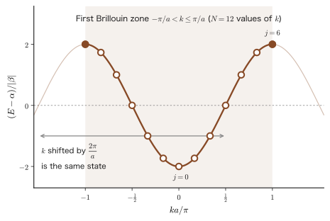
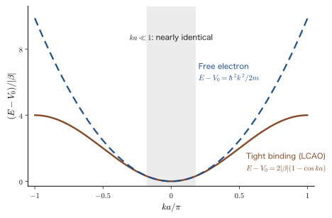
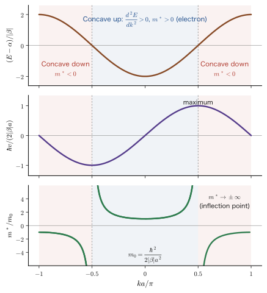
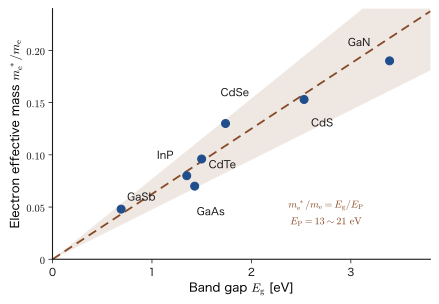
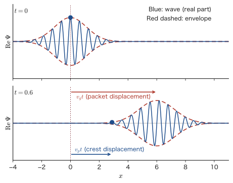
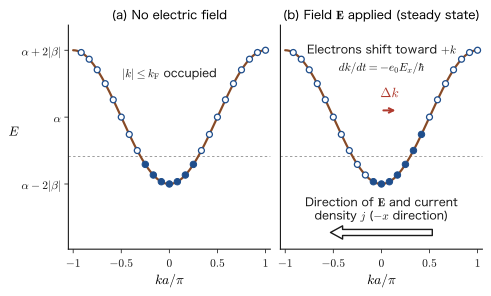
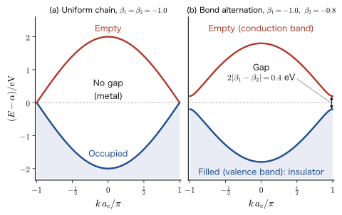

Chapter 41From Molecular Orbitals to Crystal Bands (1) — The One-Dimensional Atomic Chain, Density of States, Effective Mass, and Electrical Conduction
When two hydrogen atoms approach each other, two molecular orbitals, a bonding orbital and an antibonding orbital, are formed from their respective 1s orbitals (Chapter 39, Section 39.3). What happens, then, if we line up three, four, … atoms in a row? The number of orbitals grows with the number of atoms $N$, but the energy does not spread out without limit; instead, the $N$ orbitals are packed into a range of fixed width. In a solid, where $N$ exceeds $10^{22}$, the spacing between neighboring levels is about $10^{-22}\ \mathrm{eV}$, and the levels effectively form a continuous band (energy band). The reasons why current flows in a copper wire, why silicon is a semiconductor, and why diamond is an insulator are explained by this “band” and by the behavior of electrons within it.
In classical physics, the electrons of a metal are treated as free particles of mass $m_{\mathrm e}$ that move while being scattered, and Ohm's law is derived from this picture (AD 03, “Introductory University Physics,” Chapter 37, Section 37.3 (in Japanese)). In quantum mechanics, an electron spreads over the entire crystal as a wave built from a superposition of atomic orbitals. The relation $E(k)$ between the wavenumber $k$ of that wave and the energy $E$ (the band structure) determines how fast the electron moves, how sluggishly it responds (the effective mass), and whether the carriers of the current are electrons or holes. The mass of an electron in a crystal differs from its vacuum value $m_{\mathrm e}$ and can sometimes even be negative. In this chapter we solve the simplest case, the one-dimensional atomic chain, without skipping any lines of the calculation, and check the mechanism from beginning to end.
This chapter is a bridge between the molecular orbital method (Chapters 38–40) and solid-state physics (the companion volume “Solid-State Physics” (AD 06), Chapters 15–17 (in Japanese)). Solid-state physics gives the band structure first and proceeds from there; here we start from molecules and see that a band is “an array of bonding and antibonding combinations of atomic orbitals.” In the next chapter (Chapter 42) we extend the discussion to two and three dimensions and to $p$ orbitals.
- Be able to verify, through explicit calculations for $N=2,\dots,7$, that lining up $N$ atoms gives $N$ levels, all of which fall inside a window of width $4|\beta|$
- Be able to use periodic boundary conditions and Bloch sums to derive $E(k)=\alpha+2\beta\cos ka$ for a monatomic chain (including the fact that $k$ takes discrete values, the first Brillouin zone, and an introduction to Bloch's theorem)
- Be able to explain, for $s$ and $p$ orbitals, bonding and antibonding character, the sign of $\beta$, and the bandwidth $4|\beta|$ from the signs of the wave functions at $k=0$ and $k=\pm\pi/a$
- Be able to find the density of states $D(E)$ and explain why, in one dimension, levels gather at the band edges (van Hove singularities)
- Be able to compare the LCAO result with the free-electron result to understand the meaning of $\alpha$ and $\beta$, and to derive the effective mass $m^*=\hbar^2\big/(\mathrm{d}^2E/\mathrm{d}k^2)$ from the curvature of the band
- Be able to explain the relation between the sign of the effective mass and holes, know examples of effective masses and mobilities in semiconductors, derive $\sigma=ne_0^2\tau/m^*$ (together with the range in which it holds), and estimate the conductivity of copper
- Be able to explain the half-filled chain, the “motion” of electrons, and the Peierls transition caused by bond alternation in terms of the signs of the wave functions and the occupation of $k$-space
Source notes: the LCAO pages of Yasuhide Mochizuki's “Physics Notes: Quantum Mechanics” (band structure of a monatomic chain, effective mass, electrical conductivity, and understanding band diagrams through material structure). Related simulator: From Molecular Orbitals to Bands.
41.1 Lining Up Atoms Turns Levels into a Band — $N$ Levels and a $4|\beta|$ Window
41.1.1 Conventions of the model — one orbital on each atom
Consider $N$ atoms arranged in a row with spacing $a$ (let the position of the $n$th atom be $x_n=na$). Suppose that each atom has just one orbital that an electron can occupy (for example, the $1s$ orbital of a hydrogen atom, or the $3s$ orbital of sodium). We write the orbital of the $n$th atom as $\phi_n(x)=\phi(x-na)$. These are simply functions of the same form translated from atom to atom. The one-electron Hamiltonian $\hat{H}$ is that of an electron moving in the potential created by all the atomic nuclei (together with the average effect of the other electrons), and it is an extension of the $\mathrm{H_2^+}$ of Chapter 39 to $N$ atoms. If we look for molecular orbitals in the form of a linear combination of atomic orbitals, $\psi=\sum_n c_n\phi_n$ (LCAO), we obtain the secular equation that determines the coefficients $c_n$. We simplify the integrals that appear in this equation as follows.
Definition 41.1: Tight-binding model (Hückel-type one-dimensional chain)
Each atom has one normalized orbital $\phi_n$, and we make the following three assumptions.
(i) The overlap integral is neglected: $S_{mn}=\braket{\phi_m}{\phi_n}=\delta_{mn}$.
(ii) The diagonal elements are the same for all atoms: $H_{nn}=\mel{\phi_n}{\hat{H}}{\phi_n}=\alpha$.
(iii) There is an interaction only between neighboring atoms: $H_{n,n\pm1}=\mel{\phi_n}{\hat{H}}{\phi_{n\pm1}}=\beta$. All other $H_{mn}$ are set equal to $0$.
$\alpha$ is called the orbital energy, and $\beta$ the resonance integral (or hopping integral). $\beta$ is the integral for the process in which the electron hops over to the neighboring atom.
Caution: $\alpha$ and $\beta$ are symbols of the Hückel method (not to be confused with the spin functions or the two-electron integrals)
As in the Hückel method of Chapters 39 and 40, the $\alpha$ and $\beta$ of this chapter are matrix elements of the one-electron Hamiltonian (one-electron integrals). They are unrelated to the spin functions $\alpha,\beta$ (Chapter 23), to the two-electron integrals $U_{ab}$, $J_{ab}$ (Chapter 35), and to the fine-structure constant $\alpha$. For a chain of $s$ orbitals, $\beta\le0$ (negative) (Section 41.3). The symbol $t$ for hopping used in the companion volume “Density Functional Theory” (AD 07) and in solid-state physics is related to it by $t=-\beta$ ($t\ge0$), and one writes $E(k)=-2t\cos ka$. This book uses $\beta$ for continuity with the molecular orbital method. Note also that the sign of $\beta$ depends on the convention for the phase of the orbitals. For a chain in which all the axial $p$ orbitals are taken with the same orientation, $\beta\gt0$ (Section 41.3.3). If the orientation of the $p$ orbitals is reversed on every other atom, then $\beta\lt0$ ($t=-\beta\gt0$), and the same band is simply drawn shifted in $k$ by $\pi/a$. The $t$ of solid-state physics and of AD 07 is written in this “phase convention in which $t\gt0$.”
41.1.2 Eigenvalues of an open chain — $N=2$, $3$, and general $N$
First we find the levels of an open chain of $N$ atoms, that is, a chain with two ends. For $N=2$, the secular equation is the same as that of $\mathrm{H_2^+}$ in Chapter 39, in the case $S=0$.
$$ \begin{vmatrix}\alpha-E&\beta\\ \beta&\alpha-E\end{vmatrix}=(\alpha-E)^2-\beta^2=0\quad\Longrightarrow\quad E=\alpha\pm\beta . $$Since $\beta\lt 0$, $E=\alpha+\beta$ is lower (the bonding orbital) and $E=\alpha-\beta$ is higher (the antibonding orbital). For $N=3$,
$$ \begin{vmatrix}\alpha-E&\beta&0\\ \beta&\alpha-E&\beta\\ 0&\beta&\alpha-E\end{vmatrix} =(\alpha-E)\bigl[(\alpha-E)^2-\beta^2\bigr]-\beta\bigl[\beta(\alpha-E)-0\bigr] =(\alpha-E)\bigl[(\alpha-E)^2-2\beta^2\bigr]=0 $$so we obtain the three levels $E=\alpha,\ \alpha\pm\sqrt2\,\beta$ (we expanded along the first row; the first term is $(\alpha-E)$ times the $2\times2$ determinant $(\alpha-E)^2-\beta^2$, and the second term is $-\beta$ times the cofactor). For general $N$ the result is as follows.
Theorem 41.1: Levels and eigenvectors of an open chain of $N$ atoms
In the model of Definition 41.1, the $N$ levels of an open chain of $N$ atoms (a chain with two ends) are
\begin{equation} E_j=\alpha+2\beta\cos\frac{j\pi}{N+1},\qquad c_n^{(j)}=\sqrt{\frac{2}{N+1}}\,\sin\frac{jn\pi}{N+1}\qquad(j=1,2,\dots,N;\ n=1,\dots,N) \label{eq:41-open} \end{equation}where $c_n^{(j)}$ is the coefficient of the $n$th atom in the $j$th level, which has $j-1$ nodes.
Key points of the derivation (for details, see Chapter 40, Section 40.5.1)
Eq. \eqref{eq:41-open} is the same as Formula 40.5 (the Hückel levels of a linear carbon chain) in Chapter 40, Section 40.5.1. Chapter 40 numbers the atoms with $\mu$, whereas in this chapter we write $n$, to tie the number to the position of the atom, $x_n=na$. We recall only the outline of the derivation. The $n$th row of the secular equation is (since $S$ is the identity matrix) $\alpha c_n+\beta(c_{n-1}+c_{n+1})=E\,c_n$, and the end condition is $c_0=c_{N+1}=0$. Substituting $c_n=C\sin n\theta$ and using the sum-to-product formula $\sin(n-1)\theta+\sin(n+1)\theta=2\sin n\theta\cos\theta$, we obtain $E=\alpha+2\beta\cos\theta$; the condition $c_{N+1}=0$ gives $(N+1)\theta=j\pi$, the independent solutions are the $N$ values $j=1,\dots,N$, and normalization gives $C=\sqrt{2/(N+1)}$.
This result is the discrete version of the “particle in a box” $\psi_n(x)=\sqrt{2/L}\,\sin(n\pi x/L)$ of Chapter 10. In a continuous box there were infinitely many levels because $x$ is continuous; in a chain of $N$ atoms, the coordinate $n$ is discrete, so there are only $N$ levels. Also, for small $j$, $\cos\theta_j\approx1-\theta_j^2/2$ gives $E_j\approx\alpha+2\beta+|\beta|\theta_j^2$, which agrees with the energy of a particle in a box, proportional to the square of $\theta_j$.
Example 41.1: A chain with $N=100$ — the level spacing at the edge of the window and at the center
For an open chain with $N=100$ ($\beta\lt 0$), find in units of $|\beta|$: (1) how far above the lower edge $\alpha-2|\beta|$ of the window the lowest level lies, (2) the spacing $E_2-E_1$ of the lowest two levels, and (3) the spacing near the center of the window ($j=50$ and $j=51$). Also estimate the ratio between (2) and (3) by using an expansion for small $\theta$.
Solution. Putting $N+1=101$ and $\beta=-|\beta|$ in Eq. \eqref{eq:41-open}, we have $E_j=\alpha-2|\beta|\cos\dfrac{j\pi}{101}$.
First we summarize the levels of this chain in a table (since $E_j=-E_{101-j}+2\alpha$, the levels are symmetric above and below $\alpha$).
| $j$ | 1 | 2 | 3 | 50 | 51 | 98 | 99 | 100 |
|---|---|---|---|---|---|---|---|---|
| $(E_j-\alpha)/|\beta|$ | $-1.99903$ | $-1.99613$ | $-1.99130$ | $-0.03110$ | $+0.03110$ | $+1.99130$ | $+1.99613$ | $+1.99903$ |
(1) $E_1-(\alpha-2|\beta|)=2|\beta|\bigl(1-\cos\dfrac{\pi}{101}\bigr)\approx|\beta|\Bigl(\dfrac{\pi}{101}\Bigr)^2=9.68\times10^{-4}|\beta|$ ($1-\cos\theta\approx\theta^2/2$). The lowest level lies almost $10^{-3}|\beta|$ above the lower edge of the window.
(2) $E_2-E_1=2|\beta|\bigl(\cos\dfrac{\pi}{101}-\cos\dfrac{2\pi}{101}\bigr)\approx|\beta|\Bigl(\dfrac{\pi}{101}\Bigr)^2(4-1)=2.90\times10^{-3}|\beta|$.
(3) At the center, $E_{51}-E_{50}=2|\beta|\bigl(\cos\dfrac{50\pi}{101}-\cos\dfrac{51\pi}{101}\bigr)=4|\beta|\sin\dfrac{\pi}{2}\sin\dfrac{\pi}{202}=4|\beta|\sin\dfrac{\pi}{202}=6.22\times10^{-2}|\beta|$ (we used the formula that turns a difference into a product, $\cos A-\cos B=-2\sin\frac{A+B}{2}\sin\frac{A-B}{2}$; here $\frac{A+B}{2}=\frac{\pi}{2}$).
The ratio is $\dfrac{E_{51}-E_{50}}{E_2-E_1}\approx\dfrac{4\,(\pi/202)}{3\,(\pi/101)^2}=\dfrac{2\cdot101}{3\pi}\approx21$. The spacing of the levels at the center of the window ($0.062|\beta|$) is about 1.6 times the average spacing $4|\beta|/N=0.04|\beta|$, and the spacing at the edge ($0.0029|\beta|$) is about $1/14$ of it, so the levels are packed more densely toward both ends of the window. This fact is treated quantitatively in Section 41.4 as the density of states.
41.1.3 As $N$ grows, the levels become a band
As Eq. \eqref{eq:41-open} shows, however large we make $N$, we have $|\cos\theta|\le1$, so $|E_j-\alpha|\lt2|\beta|$. That is, only the number of levels grows in proportion to $N$, while the width $4|\beta|$ of the window containing the levels does not depend on $N$. The average spacing of the levels within the window is $4|\beta|/N$; for example, for $|\beta|=1\ \mathrm{eV}$ and $N=10^{22}$ (the number of atoms in $1\ \mathrm{cm^3}$ of copper is $8.5\times10^{22}$), it is $4\times10^{-22}\ \mathrm{eV}$. This is smaller by many orders of magnitude than the thermal energy at room temperature, $k_{\mathrm B}T=0.026\ \mathrm{eV}$, so the levels can be regarded as continuous. We call this continuous collection of levels an energy band. The width $4|\beta|$ of the band is determined by the magnitude $|\beta|$ of the interaction between the orbitals of neighboring atoms.
In this picture, the splitting ($2|\beta|$) into the bonding and antibonding orbitals of $\mathrm{H_2^+}$ in Chapter 39 grows into a band of width $4|\beta|$ as atoms are added. In the first tab of the related simulator “From Molecular Orbitals to Bands,” you can check how the levels change when atoms are added one at a time.
41.2 The Band of a Monatomic Chain, $E(k)=\alpha+2\beta\cos ka$ — Bloch Sums and Periodic Boundary Conditions
In the open chain of the previous section, the coefficients $c_n$ were the standing wave $\sin n\theta$, and the effect of the two ends entered every level. In a chain of $10^{22}$ atoms, however, the two ends hardly affect the electrons in the interior, which determine the properties of the material. To eliminate the ends, therefore, we join the two ends of the chain to form a ring. This is called periodic boundary conditions (the Born–von Kármán periodic boundary conditions). In Chapter 10, Section 10.7, we imposed the same conditions on a free electron in a box and counted the density of states. Here we apply it to the atomic chain.
41.2.1 Periodic boundary conditions and the Bloch sum
We arrange $N$ atoms in a ring and identify the ($N+1$)th atom with the first atom ($\phi_{n+N}\equiv\phi_n$). On a ring, the first and $N$th atoms are also neighbors, so $H_{N,1}=H_{1,N}=\beta$ is added, and the $n$th row of the secular equation becomes, for all $n$ ($n\pm1$ is taken modulo $N$),
\begin{equation} \alpha c_n+\beta\,(c_{n-1}+c_{n+1})=E\,c_n \label{eq:41-secular} \end{equation}Since all the atoms are equivalent, we try a solution in which the magnitude of the coefficient does not depend on the atom, of the form $c_n=e^{ikna}$ ($k$ is a constant). This is a plane wave of wavenumber $k$ viewed at the atomic positions $x_n=na$. The periodicity condition $c_{n+N}=c_n$ of the ring requires that
\begin{equation} e^{ik(n+N)a}=e^{ikna}\quad\Longleftrightarrow\quad e^{ikNa}=1\quad\Longleftrightarrow\quad k=\frac{2\pi}{Na}\,j\qquad(j\text{ is an integer}) \label{eq:41-kquant} \end{equation}hold. The wavenumber $k$ can take only discrete values spaced $2\pi/(Na)$ apart. $e^{ika}$ is an $N$th root of unity.
Math Tool: The $N$th roots of unity
The complex numbers $z$ satisfying $z^N=1$ are the $N$ numbers $z=e^{2\pi ij/N}$ ($j=0,1,\dots,N-1$); they lie on the unit circle in the complex plane as the vertices of a regular $N$-gon. The equation $e^{ikNa}=1$ means that $z=e^{ika}$ is an $N$th root of unity (University Mathematics, Chapter 21, Section 21.5). Since $z$ does not change when $j$ is increased by $N$, the distinct states are only the $N$ states $j=0,\dots,N-1$.
If we add $2\pi/a$ to $k$, we obtain $e^{i(k+2\pi/a)na}=e^{ikna}e^{2\pi in}=e^{ikna}$, so the coefficients of all the atoms do not change. That is, $k$ and $k+2\pi/a$ are the same state (this corresponds to $j$ and $j+N$ being the same state). Therefore the independent values of $k$ are the $N$ values in one period; for example, we can take the values in the range
\begin{equation} -\frac{\pi}{a}\lt k\le\frac{\pi}{a} \label{eq:41-bz} \end{equation}This range is called the first Brillouin zone. Exactly $N$ values of $k$ fit in this range, with spacing $2\pi/(Na)$ ($j=-N/2+1,\dots,N/2$, when $N$ is even). That the number of atoms equals the number of allowed $k$ values reflects the fact that “$N$ atomic orbitals produce $N$ molecular orbitals.”
Definition 41.2: Bloch sum
The sum of the atomic orbitals $\phi_n$ with the phase $e^{ikna}$ of wavenumber $k$ attached,
\begin{equation} \psi_k(x)=\sum_{n=1}^{N}e^{ikna}\,\phi_n(x)\qquad\Bigl(k=\frac{2\pi}{Na}\,j\Bigr) \label{eq:41-bloch} \end{equation}is called a Bloch sum. It is the LCAO molecular orbital with coefficients $c_n=e^{ikna}$ (normalization is carried out in step [iii] of the derivation).
Theorem 41.2: Bloch's theorem (LCAO form)
Under a translation by the lattice period $a$, the Bloch sum merely acquires the phase $e^{ika}$:
\begin{equation} \psi_k(x+a)=e^{ika}\,\psi_k(x) \label{eq:41-bloch-thm} \end{equation}Proof
Since $\phi_n(x)=\phi(x-na)$, we have $\phi_n(x+a)=\phi\bigl(x-(n-1)a\bigr)=\phi_{n-1}(x)$. Hence
$$ \psi_k(x+a)=\sum_ne^{ikna}\phi_{n-1}(x)=e^{ika}\sum_ne^{ik(n-1)a}\phi_{n-1}(x)=e^{ika}\sum_{n'}e^{ikn'a}\phi_{n'}(x)=e^{ika}\psi_k(x). $$In the second equality we split $e^{ikna}=e^{ika}e^{ik(n-1)a}$, and in the third we relabeled the index as $n'=n-1$ (on a ring, $n'=0$ is identified with $n'=N$, and by the periodicity condition $e^{ikNa}=1$ the form of the sum does not change).
∎
Eq. \eqref{eq:41-bloch-thm} makes the same assertion as saying that $u_k(x)=e^{-ikx}\psi_k(x)$ is a periodic function of period $a$, that is, that $\psi_k(x)=e^{ikx}u_k(x)$ (plane wave $\times$ periodic function). Indeed, $u_k(x+a)=e^{-ik(x+a)}\psi_k(x+a)=e^{-ikx}e^{-ika}e^{ika}\psi_k(x)=u_k(x)$. The statement that the eigenfunctions of an electron in the periodic potential of a crystal generally have this form is called Bloch's theorem (a general proof is given in the companion volume Solid-State Physics, Chapter 16, Section 16.2 (in Japanese), and the treatment from the side of density functional theory is in AD 07, Chapter 12 (in Japanese)). Here we have confirmed it in the concrete form of a sum of atomic orbitals.
41.2.2 Calculating the energy
We calculate the energy of $\psi_k$, that is, the average energy of one electron, $E_k=\mel{\psi_k}{\hat{H}}{\psi_k}\big/\braket{\psi_k}{\psi_k}$.
Derivation: $E(k)=\alpha+2\beta\cos ka$
[i] Denominator. Using $\braket{\phi_m}{\phi_n}=\delta_{mn}$ (Definition 41.1 (i)), we obtain
$$ \braket{\psi_k}{\psi_k}=\sum_{m=1}^N\sum_{n=1}^Ne^{-ikma}e^{ikna}\braket{\phi_m}{\phi_n}=\sum_{m=1}^N\sum_{n=1}^Ne^{ik(n-m)a}\delta_{mn}=\sum_{n=1}^N1=N . $$(The coefficients of the bra carry the complex conjugate $(e^{ikma})^*=e^{-ikma}$.)
[ii] Numerator. $H_{mn}=\mel{\phi_m}{\hat{H}}{\phi_n}$ depends only on $n-m$. It equals $\alpha$ for $n-m=0$, $\beta$ for $n-m=\pm1$, and $0$ otherwise ($n-m$ is taken modulo $N$ on a ring).
$$ \mel{\psi_k}{\hat{H}}{\psi_k}=\sum_{m,n}e^{ik(n-m)a}H_{mn} =\sum_{m=1}^N\Bigl[\alpha\underbrace{e^{0}}_{n=m}+\beta\underbrace{e^{ika}}_{n=m+1}+\beta\underbrace{e^{-ika}}_{n=m-1}\Bigr] =N\bigl[\alpha+\beta\,(e^{ika}+e^{-ika})\bigr]=N\,(\alpha+2\beta\cos ka). $$In the last step we used Euler's formula $e^{ika}+e^{-ika}=2\cos ka$.
[iii] Take the ratio. $E_k=\dfrac{N(\alpha+2\beta\cos ka)}{N}=\alpha+2\beta\cos ka$. Note also that, since $\braket{\psi_k}{\psi_k}=N$ from [i], the normalized Bloch sum is $\psi_k/\sqrt N=\dfrac{1}{\sqrt N}\displaystyle\sum_ne^{ikna}\phi_n$ (the magnitude of the coefficient, $|c_n|^2=1/N$, is the same for every atom).
[iv] It is the eigenvalue itself. Substituting the coefficients $c_n=e^{ikna}$ into the left-hand side of Eq. \eqref{eq:41-secular}, we get $\alpha e^{ikna}+\beta\bigl(e^{ik(n-1)a}+e^{ik(n+1)a}\bigr)=(\alpha+\beta\,e^{-ika}+\beta\,e^{ika})\,e^{ikna}=(\alpha+2\beta\cos ka)\,e^{ikna}$, which agrees with the right-hand side $E\,e^{ikna}$. The Bloch sum is an exact solution of the secular equation with eigenvalue $E_k$, and the “average energy” above is the eigenvalue.
∎
Eq. \eqref{eq:41-Ek} is the band structure of the monatomic chain. Since $E(k)=E(-k)$, except for the states $k=0$ and $k=\pi/a$, the two states $\pm k$ have the same energy (they are doubly degenerate). Adding and subtracting $\psi_k$ and $\psi_{-k}$ gives the real standing waves $\sum_n\cos(kna)\,\phi_n$ and $\sum_n\sin(kna)\,\phi_n$. The factor $e^{ikna}$ represents a wave traveling to the right ($k\gt 0$) and $e^{-ikna}$ a wave traveling to the left, and their superposition is a standing wave (the same relationship as for the particle in a box in Chapter 10, Section 10.1). We will use this point when we consider the electric current in Sections 41.8 and 41.9.
Let us state the relationship with the open chain of Section 41.1. The $\theta_j=j\pi/(N+1)$ of the open chain (Theorem 41.1) is replaced on the ring by $ka=2\pi j/N$. Both have the same form $E=\alpha+2\beta\cos\theta$ ($\theta=ka$), and the standing wave $\sin n\theta$ of the open chain corresponds to the superposition $\sin(kna)=\dfrac{e^{ikna}-e^{-ikna}}{2i}$ of the right-traveling wave $e^{ikna}$ and the left-traveling wave $e^{-ikna}$ of the ring. When there are ends, the wave is reflected at the ends and becomes a standing wave; when there are no ends, traveling waves are allowed. When $N$ is large, the spacing and the range of the levels are essentially the same in the two cases.

Example 41.2: The $\pi$ orbitals of benzene form a ring with $N=6$
We treat the $2p_z$ orbitals (perpendicular to the molecular plane) of the six carbon atoms of benzene $\mathrm{C_6H_6}$ by the tight-binding model of a ring with $N=6$. (1) Find the allowed $k$ and the energies $E_j$. (2) Express the total $\pi$-electron energy, when six $\pi$ electrons are filled in, in terms of $\alpha,\beta$.
Solution. (1) Setting $N=6$ in Eq. \eqref{eq:41-kquant}, we get $ka=\dfrac{2\pi j}{6}=\dfrac{\pi j}{3}$ ($j=0,\pm1,\pm2,3$; $j=3$ and $j=-3$ are the same state). The energy is $E_j=\alpha+2\beta\cos\dfrac{\pi j}{3}$, and from $\cos0=1$, $\cos\dfrac{\pi}{3}=\dfrac12$, $\cos\dfrac{2\pi}{3}=-\dfrac12$, $\cos\pi=-1$ we obtain
$$ E_0=\alpha+2\beta,\qquad E_{\pm1}=\alpha+\beta\ (2\text{-fold}),\qquad E_{\pm2}=\alpha-\beta\ (2\text{-fold}),\qquad E_3=\alpha-2\beta . $$There are six orbitals in all, and since $\beta\lt 0$, $E_0$ is the lowest. (2) The six $\pi$ electrons are filled in from the bottom, two at a time with opposite spins, so two go into $E_0$ and four into $E_{\pm1}$ (two orbitals; both orbitals of $E_{\pm1}$ are filled).
$$ E_\pi=2(\alpha+2\beta)+4(\alpha+\beta)=6\alpha+8\beta . $$This agrees with the $\pi$-electron energy of benzene in the Hückel method (Chapter 40). Compared with $6\alpha+6\beta$, three times the $\pi$ bond ($2\alpha+2\beta$) of ethylene $\mathrm{C_2H_4}$, it is lower by $2|\beta|$. This $2|\beta|$ is the delocalization energy due to the electrons spreading over the whole ring.
Example 41.3: Levels and degeneracy of a ring with $N=12$
For a ring with $N=12$, find all the allowed values of $k$, the energies, and the degeneracies, and state how many levels there are.
Solution. $ka=\dfrac{2\pi j}{12}=\dfrac{\pi j}{6}$ ($j=-5,\dots,6$). Writing $E_j-\alpha=2\beta\cos\dfrac{\pi j}{6}$ in units of $\beta$, we have $j=0$: $2$; $j=\pm1$: $\sqrt3=1.732$; $j=\pm2$: $1$; $j=\pm3$: $0$; $j=\pm4$: $-1$; $j=\pm5$: $-1.732$; $j=6$: $-2$. Therefore $j=0$ and $j=6$ are single levels (nondegenerate), and $j=\pm1,\dots,\pm5$ are doubly degenerate; there are $2+5=7$ distinct energies, and the number of states is $1+1+2\times5=12=N$. If $\beta\lt 0$, $E$ is lowest at $j=0$ and highest at $j=6$.
41.2.3 When the overlap integral is not neglected
If we drop $S_{mn}=\delta_{mn}$ of Definition 41.1 (i) and retain the overlap integral $S=\braket{\phi_n}{\phi_{n\pm1}}$ between the orbitals of neighboring atoms, the calculation of the denominator changes. By the same calculation as in [i], $\braket{\psi_k}{\psi_k}=N(1+S\,e^{ika}+S\,e^{-ika})=N(1+2S\cos ka)$, so we obtain
\begin{equation} E(k)=\frac{\alpha+2\beta\cos ka}{1+2S\cos ka} \label{eq:41-Ek-S} \end{equation}(we assume $|2S|\lt1$). This is the chain version of $E=(\alpha\pm\beta)/(1\pm S)$ for $\mathrm{H_2^+}$ (Chapter 39). Measured from the orbital energy $\alpha$, it becomes $E(k)-\alpha=\dfrac{2\beta'\cos ka}{1+2S\cos ka}$ ($\beta'\equiv\beta-\alpha S$). For $\beta'\lt0$ and $S\gt0$, the lowering of the bonding $k=0$ level is $\dfrac{2|\beta'|}{1+2S}$ and the raising of the antibonding $k=\pi/a$ level is $\dfrac{2|\beta'|}{1-2S}$, so when there is overlap, the amount by which the antibonding orbital is pushed up is larger than the amount by which the bonding orbital is pushed down. This shows that the conclusion for $\mathrm{H_2^+}$ in Chapter 39 holds unchanged for the chain (Exercise 41.2). In this chapter, for simplicity, we discuss the case $S=0$ from here on.
41.3 Bands of $s$ and $p$ Orbitals — Bonding, Antibonding, and Bandwidth
Eq. \eqref{eq:41-Ek} has the same form for a chain of any kind of orbital. However, whether $k=0$ is the lowest or the highest energy is determined by the type of atomic orbital (the sign of $\beta$). Let us confirm this by looking at the signs of the Bloch-sum wave function. Take the axis of the chain to be the $x$ axis.
41.3.1 The chain of $s$ orbitals — bonding when the signs match
The $s$ orbital $\phi_n$ spreads out spherically symmetrically around the atomic nucleus, and we take it to be a function that has positive values near the center of each atom. Then the Bloch sums for $k=0$ and $k=\pm\pi/a$ are as follows.
\begin{align} k=0:&\qquad \psi_0=\sum_n\phi_n=\cdots+\phi_{n-1}+\phi_n+\phi_{n+1}+\cdots, \label{eq:41-s0}\\ k=\pm\frac{\pi}{a}:&\qquad \psi_{\pi/a}=\sum_n e^{i\pi n}\phi_n=\sum_n(-1)^n\phi_n=\cdots-\phi_{n-1}+\phi_n-\phi_{n+1}+\cdots \label{eq:41-spi} \end{align}(We used $e^{i\pi n}=(-1)^n$. Since $e^{i\pi n}$ and $e^{-i\pi n}$ have the same value, $k=\pi/a$ and $k=-\pi/a$ are the same state.) The upper two rows of Figure 41.3 show the signs of these for five atoms ($n-2,\dots,n+2$).
For $k=0$, the orbitals of adjacent atoms overlap with the same sign, and the wave function is reinforced between the atoms (there is no node), so this is a bonding orbital. For $k=\pm\pi/a$, the sign flips from each orbital to the next and a node forms between all the atoms, so this is an antibonding orbital. This is the extension of $\phi_A+\phi_B$ (bonding) and $\phi_A-\phi_B$ (antibonding) of $\mathrm{H_2^+}$ (Chapter 39, Section 39.3) to a chain of $N$ atoms. A bonding orbital is lower in energy than an antibonding orbital (the electron gathers between the nuclei and is attracted by both nuclei), so we have
$$ E(0)=\alpha+2\beta\ \lt\ E\!\left(\frac{\pi}{a}\right)=\alpha-2\beta\quad\Longleftrightarrow\quad\beta\lt0 \label{eq:41-sbeta} $$That is, for a chain of $s$ orbitals, $\beta\lt 0$, and $E(k)=\alpha+2\beta\cos ka$ takes a U shape, with its minimum at $k=0$ and its maximum at $k=\pm\pi/a$. Figure 41.4(a) shows this. At $k=\pm\pi/2a$ (the phase difference between adjacent orbitals is $90^\circ$), $E=\alpha$, which is the orbital energy of the atom itself. It is neither bonding nor antibonding (Section 41.9).
![Band diagrams of a chain of s orbitals and a chain of p orbitals. The horizontal axis is ka/π and the vertical axis is energy. (a) For the s orbital, β is negative, and the band is U-shaped, with its lowest value α−2|β| at k=0 and its highest value α+2|β| at k=±π/a. The seven short horizontal lines at the left end are the levels of an open chain with N=7; they are dense at both ends of the band and sparse in the middle. (b) For the p orbital (along the chain axis), β is positive, and the band is an inverted U, with its highest value at k=0 and its lowest at k=±π/a, the opposite of the shape for s](figs/ch41_fig41-4.svg)
41.3.2 Bandwidth and the resonance integral
From Eq. \eqref{eq:41-Ek}, the energy difference between the states $k=0$ and $k=\pm\pi/a$ is the difference between the lowest and the highest energies of the band:
\begin{equation} W\equiv\left|E\!\left(\frac{\pi}{a}\right)-E(0)\right|=|(\alpha-2\beta)-(\alpha+2\beta)|=4|\beta| \label{eq:41-width} \end{equation}This is called the bandwidth. $\beta=\mel{\phi_m}{\hat{H}}{\phi_n}$ ($m,n$ are adjacent atoms) expresses the magnitude of the energy interaction between the orbitals of adjacent atoms. The larger the overlap of the two orbitals, the stronger the effect of the electron moving back and forth between the atoms, and the larger $|\beta|$ is. Therefore, the larger the orbital overlap, the wider the band. If the interatomic distance $a$ in a solid is shortened (by applying pressure), the band widens; if $a$ is increased, the band narrows.
Example 41.4: Bandwidth and interatomic distance of a chain of hydrogen 1s orbitals
The two-center overlap integral of hydrogen 1s orbitals is $S(R)=e^{-R}\bigl(1+R+R^2/3\bigr)$ for the internuclear distance $R$ (in units of $a_0$) (Chapter 39, Section 39.4). (1) Find $S$ at $R=2a_0$ and $4a_0$, and describe how the overlap changes. (2) Assuming that $|\beta|$ decreases in the same way as the overlap, $|\beta|\propto e^{-a/a_0}$, find the ratio of the bandwidths when the interatomic distance is increased from $a=2.5\ \text{Å}$ to $3.0\ \text{Å}$. Take $a_0=0.529\ \text{Å}$.
Solution. (1) $S(2)=e^{-2}\bigl(1+2+\tfrac43\bigr)=0.13534\times4.3333=0.586$, $S(4)=e^{-4}\bigl(1+4+\tfrac{16}{3}\bigr)=0.018316\times10.3333=0.189$. When the internuclear distance doubles, the overlap drops to about $1/3$. (2) Since the bandwidth is proportional to $4|\beta|$, the ratio is $\dfrac{|\beta(3.0)|}{|\beta(2.5)|}=e^{-(3.0-2.5)\,\text{Å}/a_0}=e^{-0.5/0.529}=e^{-0.945}=0.389$. Merely increasing the interatomic distance by 20% reduces the bandwidth to about 39%, that is, narrows it by more than 60%.
Application: The $d$ band of a transition metal is narrower than the $s$ band
3d orbitals are compactly localized near the atomic nucleus, and their overlap with the 3d orbitals of neighboring atoms is small. For this reason, the $d$ band of a transition metal is narrow ($|\beta|$ is small), whereas the band formed from the outward-extended 4s orbitals is wide. In a narrow band, electrons tend to stay on their atoms, and the effects of magnetism and electron correlation appear strongly (for the localization of $d$ electrons, see Part VIII; for electron correlation and Hubbard's $U$, see Chapter 37, Section 37.6 and Chapter 59, as well as the companion volume on solid-state physics).
41.3.3 Chain of $p$ orbitals — the signs of facing lobes are what matter
Next, we consider a chain made of $p_x$ orbitals pointing along the chain axis (the $x$ direction). A $p_x$ orbital has one lobe positive and the other negative on either side of the nucleus. Let $\phi_n$ be the orbital of each atom, all taken with the same orientation (the lobe on the $+x$ side positive, the lobe on the $-x$ side negative). Then in the Bloch sum $\psi_0=\sum_n\phi_n$ at $k=0$, the pattern “$-\ +$” repeats on every atom, and the right lobe ($+$) of atom $n$ faces the left lobe ($-$) of atom $n+1$. That is, the facing lobes of neighboring atoms have opposite signs, and a node forms between the atoms. This is antibonding (the second row from the bottom of Figure 41.3). On the other hand, at $k=\pm\pi/a$ the orientation flips from atom to atom, and the facing lobes have the same sign, so the state is bonding (the bottom row of Figure 41.3). Therefore, in contrast to the $s$ orbital, we find
$$ E(0)=\alpha+2\beta\ \gt\ E\!\left(\frac{\pi}{a}\right)=\alpha-2\beta\quad\Longleftrightarrow\quad\beta\gt0 \label{eq:41-pbeta} $$Even with the same $E(k)=\alpha+2\beta\cos ka$, since $\beta\gt 0$ the band has an inverted-U shape with its maximum at $k=0$ and its minimum at $k=\pm\pi/a$, which is upside down relative to the $s$ orbital (Figure 41.4(b)). The bandwidth is again $4|\beta|$.
Discussion: Why is $\beta\gt 0$ for a chain of $p$ orbitals?
The signs of the overlap integral $S=\braket{\phi_n}{\phi_{n+1}}$ of two orbitals and of $\beta=\mel{\phi_n}{\hat{H}}{\phi_{n+1}}$ are, in many cases, linked with opposite signs. If we think roughly in terms of $\hat{H}\phi_{n+1}\approx\alpha\phi_{n+1}$ ($\alpha\lt 0$ being the orbital energy of the atom), then $\beta\approx\alpha S$, so $\beta\lt 0$ if $S\gt 0$ and $\beta\gt 0$ if $S\lt 0$. The chain of $s$ orbitals has $S\gt 0$, so $\beta\lt 0$; the chain of $p$ orbitals with the orientation chosen here has facing lobes of opposite sign and hence $S\lt 0$, so $\beta\gt 0$. However, $\beta\approx\alpha S$ is a rough guide that holds when the origin of energy is taken at the vacuum level (the energy is $0$ when the electron is infinitely far from the atom) and $\alpha\lt0$. The way of writing that does not depend on the origin is $\beta'=\beta-\alpha S$ of Section 41.2.3, and for an $s$-type overlap with $S\gt0$ one has $\beta'\lt0$ (the bonding orbital lies lower than $\alpha$). The sign arguments that follow hold unchanged if $\beta$ is read as $\beta'$.
Note also that the sign of $\beta$ depends on the convention for the phases of the orbitals. For example, if we take $\phi_n$ with the orientation of the $p_x$ orbitals reversed on every other atom, the sign of $\beta$ changes, and the same band is drawn shifted in $k$ by $\pi/a$. Under any convention, the physical content, “the state in which the facing parts of neighboring orbitals have the same sign is bonding,” does not change. When the $p$ orbitals are oriented perpendicular to the chain ($\pi$ type, overlapping side by side), the facing parts have the same sign and $S\gt 0$, so $\beta\lt 0$ as for the $s$ orbitals. In two- and three-dimensional lattices, $\sigma$ type and $\pi$ type coexist (Chapter 42).
Example 41.5: Determining the sign of $\beta$ from a band diagram
A single band of a one-dimensional chain has the form $E(k)=\alpha+2\beta\cos ka$, the state at $k=0$ has the highest energy, and the bandwidth is $1.6\ \mathrm{eV}$. Find the value and sign of $\beta$ and, for $\alpha=-5.0\ \mathrm{eV}$, the energies at $k=0$, $\pm\pi/2a$, and $\pm\pi/a$, and state what can be said about the type of this orbital.
Solution. From the bandwidth $4|\beta|=1.6\ \mathrm{eV}$ we get $|\beta|=0.4\ \mathrm{eV}$. Since $k=0$ is the highest, $E(0)=\alpha+2\beta\gt E(\pi/a)=\alpha-2\beta$, that is, $\beta\gt 0$, and $\beta=+0.4\ \mathrm{eV}$. $E(0)=-5.0+0.8=-4.2\ \mathrm{eV}$, $E(\pm\pi/2a)=\alpha=-5.0\ \mathrm{eV}$ ($\cos\frac{\pi}{2}=0$), $E(\pm\pi/a)=-5.0-0.8=-5.8\ \mathrm{eV}$. $\beta\gt 0$ corresponds to an arrangement in which the facing parts of neighboring orbitals have opposite signs at $k=0$ (the overlap integral is negative), for example a chain of $p$ orbitals along the axis ($\sigma$ type) lined up in the same orientation.
41.4 Density of States — Why Do Levels Pile Up at the Band Edges?
Let us look again at the $N=7$ levels lined up at the left end of Figure 41.4(a). The levels crowd together near the top and bottom of the band and are sparse near the center ($E=\alpha$). Although the $k$ values are equally spaced, the $E$ values are not. This is an important feature of a one-dimensional chain. In this section we express it quantitatively by a quantity called the density of states.
41.4.1 Definition of the density of states
Definition 41.3: Density of states
The number of one-electron orbitals (counted without distinguishing the spin orientation) whose energy lies between $E$ and $E+\mathrm{d}E$, per atom, is written $D(E)\,\mathrm{d}E$, and $D(E)$ is called the density of states (DOS). Since the total number of orbitals in the band equals the number of atoms $N$, we have $\displaystyle\int D(E)\,\mathrm{d}E=1$. Since an electron has two possible spin orientations, a single band holds $2N$ electrons. The density of states $g(E)$ of Chapter 10 (the value for the whole system) is related to it by $g(E)=N\,D(E)$.
In Chapter 10, Section 10.7, we obtained the density of states of free electrons in a box from the number of points in $k$ space. We use the same method here. The allowed values of $k$ on the ring are spaced at intervals of $2\pi/(Na)$ (Eq. \eqref{eq:41-kquant}), so an interval of length $\mathrm{d}k$ contains $\dfrac{Na}{2\pi}\,\mathrm{d}k$ values of $k$.
Math Tool: The delta function
The Dirac delta function $\delta(x)$ is a function that satisfies $\displaystyle\int\delta(x)\,g(x)\,\mathrm{d}x=g(0)$ for any smooth function $g(x)$, a function “with a spike of zero width only at $x=0$” (for the definition and properties, see University Mathematics, Chapter 30, Section 30.3). $\delta(x-x_0)$ picks out $g(x_0)$. Near a zero $x_r$ of a function $f(x)$ ($f(x_r)=0$), $f(x)\approx f'(x_r)(x-x_r)$, and since $\delta(cx)=\delta(x)/|c|$, $\delta(f(x))$ decomposes into terms at the individual zeros, each weighted by the reciprocal of the slope $|f'(x_r)|$: $\delta(f(x))=\displaystyle\sum_r\frac{\delta(x-x_r)}{|f'(x_r)|}$. We use this in the derivation below.
Derivation: Density of states in one dimension
$D(E)$ is obtained by counting, per atom, each $k$ with the Dirac delta function $\delta(E-E_k)$. When $N$ is large, the sum over $k$ is replaced by an integral ($\sum_k\to\dfrac{Na}{2\pi}\displaystyle\int_{-\pi/a}^{\pi/a}\mathrm{d}k$), so that
$$ D(E)=\frac1N\sum_k\delta(E-E_k)=\frac{a}{2\pi}\int_{-\pi/a}^{\pi/a}\delta\bigl(E-E(k)\bigr)\,\mathrm{d}k . $$We use the composition formula for the delta function, $\delta(f(k))=\sum_r\delta(k-k_r)/|f'(k_r)|$ ($k_r$ are the solutions of $f(k_r)=0$). Because $E(k)=E(-k)$, the values of $k$ for which $E(k)=E$ are the two values $k_r=\pm k_E$, and for both of them $|E'(k_r)|=|E'(k_E)|$. Therefore
\begin{equation} D(E)=\frac{a}{2\pi}\cdot\frac{2}{|E'(k_E)|}=\frac{a}{\pi}\,\frac{1}{|\mathrm{d}E/\mathrm{d}k|} \label{eq:41-dos-general} \end{equation}holds. The density of states is proportional to the reciprocal of the slope of the band (which, as we shall see later, is proportional to the speed of the electron). Where the slope is small (where the band is flat), many values of $k$ fall into the same energy interval. For $E(k)=\alpha+2\beta\cos ka$ we have $\mathrm{d}E/\mathrm{d}k=-2\beta a\sin ka$, so
$$ D(E)=\frac{a}{\pi}\cdot\frac{1}{2|\beta|a\,|\sin ka|}=\frac{1}{2\pi|\beta|\,|\sin ka|}. $$From $\cos ka=(E-\alpha)/(2\beta)$ we get $|\sin ka|=\sqrt{1-\cos^2ka}=\sqrt{1-\dfrac{(E-\alpha)^2}{4\beta^2}}=\dfrac{\sqrt{4\beta^2-(E-\alpha)^2}}{2|\beta|}$, so we obtain
\begin{equation} D(E)=\frac{1}{\pi\sqrt{4\beta^2-(E-\alpha)^2}}\qquad(|E-\alpha|\lt2|\beta|) \label{eq:41-dos} \end{equation}Outside the band ($|E-\alpha|\gt 2|\beta|$), $D(E)=0$.
Check of the normalization. Let $E-\alpha=2|\beta|\sin\varphi$ ($-\pi/2\le\varphi\le\pi/2$). Then $\mathrm{d}E=2|\beta|\cos\varphi\,\mathrm{d}\varphi$ and $\sqrt{4\beta^2-(E-\alpha)^2}=2|\beta|\cos\varphi$, so $\displaystyle\int D\,\mathrm{d}E=\frac1\pi\int_{-\pi/2}^{\pi/2}\mathrm{d}\varphi=1$, which agrees with the normalization in Definition 41.3.
∎
The density of states takes its minimum value $1/(2\pi|\beta|)$ at the center of the band, $E=\alpha$, and at the band edges $E\to\alpha\pm2|\beta|$ it diverges to infinity in the form $(E-E_{\text{edge}})^{-1/2}$. For example, near the lower edge $E_0=\alpha-2|\beta|$ we have $4\beta^2-(E-\alpha)^2=\bigl(2|\beta|+E-\alpha\bigr)\bigl(2|\beta|-E+\alpha\bigr)\approx4|\beta|(E-E_0)$, so $D\approx1/\bigl(2\pi\sqrt{|\beta|(E-E_0)}\bigr)$. This has the same form as the density of states $\propto E^{-1/2}$ of one-dimensional free electrons found in Chapter 10. Even though the density of states diverges, $\int D\,\mathrm{d}E$ is finite (the integral of $1/\sqrt{\ }$ near an edge converges), which is not inconsistent with there being a finite number, $N$, of levels. Such a singularity, in which the density of states diverges or has a kink at a point in the band where the slope $\mathrm{d}E/\mathrm{d}k=0$, is called a van Hove singularity.
![Band and density of states of a monatomic chain. On the left, the k values of a ring with N=24 are shown as equally spaced points on E(k)=α−2|β|cos ka, and a horizontal line is drawn to the right from each point. On the right is the density of states D(E), whose vertical axis is the same energy axis as on the left. The histogram of the levels of a ring with N=240 (blue) agrees with the curve of the equation (red). D(E) has its minimum value 1/(2π|β|) at the center E=α and diverges at the top and bottom of the band](figs/ch41_fig41-5.svg)
Intuition: Why levels pile up at the band edges
The $k$ values are equally spaced, but $E(k)=\alpha+2\beta\cos ka$ has zero slope at $k=0$ and $k=\pm\pi/a$. Near a point of zero slope, the energy hardly changes even when $k$ changes a little, so many values of $k$ are crowded into the same energy interval. Conversely, at the center ($k=\pm\pi/2a$) the slope is greatest, so advancing $k$ by one step moves the energy a great deal, and the levels are sparse. The change in the density of the horizontal lines in Figure 41.5(a) becomes, just as it is, the shape of $D(E)$ in (b).
41.4.2 Differences among dimensions
The idea behind Eq. \eqref{eq:41-dos-general} extends directly to two and three dimensions. For an $s$ band with nearest-neighbor interactions only, the simple cubic lattice (three dimensions) has $E(\bm{k})=\alpha+2\beta(\cos k_xa+\cos k_ya+\cos k_za)$ (the two- and three-dimensional cases are derived in Chapter 42). Figure 41.6 compares the densities of states in one, two, and three dimensions, normalized by the half-width of the band $W=z|\beta|$ ($z$ is the number of nearest-neighbor atoms) (here we only preview the differences in shape among the dimensions; the derivation for two and three dimensions and the classification of van Hove singularities are given in Chapter 42, Section 42.4 and Figure 42.8).
![Dependence of the nearest-neighbor tight-binding density of states on dimension. The horizontal axis is the energy measured from the band center divided by the band half-width, and the vertical axis is the density of states multiplied by the half-width. The one-dimensional curve (brown) diverges at both ends of the band and has its minimum at the center. The two-dimensional curve (blue) diverges logarithmically at the center. The three-dimensional curve (green) goes to 0 at the edges and is high and nearly flat over a wide intermediate range](figs/ch41_fig41-6.svg)
In one dimension the levels gather at both ends of the band. In two dimensions the density of states diverges logarithmically at the band center $E=\alpha$ (the saddle point at $\bm{k}=(\pi/a,0)$). In three dimensions the density of states rises from $0$ at the band edge as $D\propto\sqrt{E-E_{\text{edge}}}$, and a high density of states spreads over the middle of the band. This difference originates in the fact that the free-electron density of states near the bottom of the band, $D\propto E^{(d-2)/2}$ ($d$ is the dimension: $E^{-1/2}$ in one dimension, constant in two dimensions, $E^{1/2}$ in three dimensions), changes with the dimension; it is the lattice version of the three-dimensional result $D\propto\sqrt E$ in Chapter 10, Section 10.7 and in Introductory University Physics, Chapter 52, Section 52.8 (in Japanese). The value of the density of states near the Fermi level governs electrical conduction, specific heat, and magnetism. In Solid-State Physics it is treated in Chapter 15 (in Japanese), and in Density Functional Theory too the density of states plays a leading role in Chapter 13 (in Japanese).
Example 41.6: A mere 10% of the bandwidth at an edge holds 20% of all states
For the $s$ band of a one-dimensional chain, what percentage of all states lies in the range from the top of the band down to a width of $0.4|\beta|$ (10% of the bandwidth $4|\beta|$)? Answer likewise for the bottom of the band, and find the combined fraction for the two ends. Also, what percentage lies in the same width $0.4|\beta|$ at the center ($|E-\alpha|\le0.2|\beta|$)?
Solution. Let $x=(E-\alpha)/(2|\beta|)$. Then Eq. \eqref{eq:41-dos} becomes $D\,\mathrm{d}E=\dfrac{\mathrm{d}x}{\pi\sqrt{1-x^2}}$. A width of $0.4|\beta|$ from the top corresponds to the range $0.8\le x\le1$ of $x$. The fraction is
$$ \frac1\pi\int_{0.8}^{1}\frac{\mathrm{d}x}{\sqrt{1-x^2}}=\frac1\pi\bigl[\arcsin x\bigr]_{0.8}^{1}=\frac{1}{\pi}\bigl(1.5708-0.9273\bigr)=0.2048 . $$The bottom has the same fraction, and the total for the two ends is $0.4097$, that is, about 41% (the two ends together amount to a width of only 20% of the whole). The fraction in the center, $|x|\le0.1$, is $\dfrac{2}{\pi}\arcsin0.1=0.0638$, or about 6.4%. In the central 20% width there is only 6%, while in the 20% width at the two ends there is 41%.
41.5 LCAO and Free-Electron Theory — The Meaning of $\alpha$ and $\beta$, and the Effective Mass
The $\alpha$ and $\beta$ in Eq. \eqref{eq:41-Ek} are defined as integrals between atomic orbitals. On the other hand, the free-electron $E(k)$ treated in Chapter 10 is written using only $\hbar$ and the electron mass $m$. Comparing the results of these two theories reveals the values of $\alpha$ and $\beta$ and the meaning of the “mass” of an electron in a crystal.
41.5.1 Comparing the two $E(k)$
The energy of a monatomic chain in the LCAO (tight-binding) method is
\begin{equation} E(k)=\alpha+2\beta\cos ka \label{eq:41-A} \end{equation}(we call this Eq. Ⓐ). On the other hand, the energy of an electron that moves freely in a constant potential $V_0$ without being acted on by any force (a free electron) is, using the momentum $p=\hbar k$,
\begin{equation} E(k)=\frac{p^2}{2m}+V_0=\frac{\hbar^2}{2m}k^2+V_0 \label{eq:41-B} \end{equation}(Eq. Ⓑ). Here $k$ is the wavenumber and $m$ is the electron mass, and the result is a parabola in which the kinetic energy is proportional to $k^2$. Ⓑ is the dispersion of an electron moving in continuous space, whereas Ⓐ is the band built from orbitals in which the electron is localized at the atomic positions. The two have entirely different starting points, but near the bottom of the band ($k=0$) the electron should be regarded as a nearly free wave that is not aware of the atomic positions. So we expand Ⓐ for $|ka|\ll1$ and compare it with Ⓑ. Using $\cos x\approx1-\dfrac{x^2}{2!}$ (the Taylor expansion in University Mathematics, Chapter 4, Section 4.2) with $x=ka$, we obtain
$$ E(k)\approx\alpha+2\beta\Bigl(1-\frac{a^2k^2}{2}\Bigr)=\alpha+2\beta-a^2\beta\,k^2 . $$Setting this equal to Ⓑ gives
$$ \alpha+2\beta-a^2\beta\,k^2=V_0+\frac{\hbar^2}{2m}k^2 . $$For this equality to hold over the range of small $k$ (that is, regardless of the value of $k$), the terms in $k^0$ must be equal to each other and the terms in $k^2$ must be equal to each other (we regard it as an identity in $k$).
\begin{equation} \begin{cases} V_0=\alpha+2\beta\\[1mm] \dfrac{\hbar^2}{2m}=-a^2\beta \end{cases}\qquad\Longrightarrow\qquad \begin{cases} \alpha=V_0+\dfrac{\hbar^2}{ma^2}\\[2mm] \beta=-\dfrac{\hbar^2}{2ma^2} \end{cases} \label{eq:41-match} \end{equation}These are the resulting relations (we found $\beta$ from the second equation and substituted it into $\alpha=V_0-2\beta$). Since $\hbar^2/(2ma^2)\gt 0$, we obtain $\beta\lt 0$. This is consistent with the conclusion of Section 41.3, where we took $\beta\lt 0$ for a chain of $s$ orbitals. Note that this correspondence assumes that at the bottom of the band the electron behaves like a free electron of mass $m$, and serves to give a rough estimate of the magnitudes of $\alpha$ and $\beta$. $V_0$ is the height of the flat potential between the atoms; in a real crystal $m$ is replaced by the effective mass $m^*$ (Section 41.5.4). Figure 41.7 shows that the two $E(k)$ coincide near the bottom of the band, and that as $ka$ becomes larger the LCAO band departs from the parabola and levels off (the band has the finite width $4|\beta|$).

Intuition: The magnitudes of $\alpha$ and $\beta$ are determined by how narrowly the electron is confined
From Eq. \eqref{eq:41-match}, $\alpha-V_0=2|\beta|=\hbar^2/(ma^2)$. This quantity is the magnitude of the kinetic energy when an electron is confined to a region of length about $a$ (by the uncertainty principle $\Delta p\sim\hbar/a$, so $(\Delta p)^2/m\sim\hbar^2/(ma^2)$). The smaller the interatomic distance $a$, the more strongly the electron is confined in the atomic orbital, so the orbital energy $\alpha$ rises and, at the same time, the interaction $|\beta|$ with the neighboring atom also becomes larger. Conversely, if $a$ is large, both the rise of $\alpha$ and the value of $|\beta|$ are small.
41.5.2 The physical meaning of $\alpha$ and $\beta$
The correspondence in Eq. \eqref{eq:41-match} makes the meanings of $\alpha$ and $\beta$ clear. Writing Definition 41.1 in the form of one-dimensional integrals (in three dimensions $\int\dd x$ becomes $\int\dd^3r$),
$$ \alpha=\int\phi_n^*\,\hat{H}\,\phi_n\,\mathrm{d}x,\qquad\beta=\int\phi_m^*\,\hat{H}\,\phi_n\,\mathrm{d}x\quad(m=n\pm1) . $$$\alpha$ is “the mean value of the mechanical energy of the electron (kinetic energy $+$ potential energy) when the electron is in the orbital $\phi_n$ of the $n$th atom.” $\beta$ is “the degree of the energy interaction of the electron between the $n$th atom and the $m$th atom,” that is, a quantity expressing how easily the electron transfers from atom to atom (hops). When the interatomic distance $a$ is made smaller, the mechanical energy $\alpha$ of the electron becomes larger ($\alpha=V_0+\hbar^2/ma^2$), and the energy interaction $|\beta|$ with the neighboring atoms also becomes larger ($|\beta|=\hbar^2/2ma^2$).
Example 41.7: $\beta$ determines how fast the electron transfers
In a system of only two atoms ($N=2$, with $\alpha,\beta$ as in Definition 41.1), the electron was in the orbital of atom 1 at time $t=0$. Find the probability $P_2(t)$ that the electron is on atom 2. For $|\beta|=1\ \mathrm{eV}$, find the shortest time for the electron to transfer completely to atom 2 and the period of the round trip. Take $\hbar=6.582\times10^{-16}\ \mathrm{eV\,s}$.
Solution. The eigenstates are $\dfrac{1}{\sqrt2}(\phi_1\pm\phi_2)$ and the energies are $E_\pm=\alpha\pm\beta$. Expanding the state at $t=0$, $\phi_1=\dfrac{1}{\sqrt2}\bigl[\tfrac{1}{\sqrt2}(\phi_1+\phi_2)+\tfrac{1}{\sqrt2}(\phi_1-\phi_2)\bigr]$, and multiplying each eigenstate by $e^{-iE_\pm t/\hbar}$, we obtain
$$ \Psi(t)=\tfrac12\bigl[e^{-i(\alpha+\beta)t/\hbar}(\phi_1+\phi_2)+e^{-i(\alpha-\beta)t/\hbar}(\phi_1-\phi_2)\bigr] =e^{-i\alpha t/\hbar}\Bigl[\cos\frac{\beta t}{\hbar}\,\phi_1-i\sin\frac{\beta t}{\hbar}\,\phi_2\Bigr] . $$(We used $\cos x=\tfrac12(e^{ix}+e^{-ix})$ and $\sin x=\tfrac{1}{2i}(e^{ix}-e^{-ix})$.) Hence the probability of being on atom 2 is $P_2(t)=\sin^2(\beta t/\hbar)$, and $P_2=1$ when $|\beta|t/\hbar=\pi/2$; that is, the shortest time is $t=\dfrac{\pi\hbar}{2|\beta|}$ and the period of the round trip is $\dfrac{\pi\hbar}{|\beta|}$. For $|\beta|=1\ \mathrm{eV}$, $\hbar/|\beta|=0.658\ \mathrm{fs}$ ($1\ \mathrm{fs}=10^{-15}\ \mathrm{s}$), so the shortest time is $\dfrac{\pi}{2}\times0.658=1.03\ \mathrm{fs}$ and the period is $2.07\ \mathrm{fs}$. The larger $|\beta|$ is, the faster the electron transfers.
41.5.3 Group velocity and effective mass
An electron in a crystal is represented by a wave packet made by superposing Bloch waves of wavenumber $k$. The speed at which a wave packet (a bundle of waves) moves is the group velocity, which is given by $v_g=\mathrm{d}\omega/\mathrm{d}k$ from the relation between the angular frequency $\omega$ and the wavenumber $k$ (the dispersion relation) (Introductory University Physics, Chapter 17, Section 17.5; we look at this in detail in Section 41.8). Since the energy of the electron is $E=\hbar\omega$, the average velocity of an electron in the band is
\begin{equation} v=\frac{1}{\hbar}\frac{\mathrm{d}E}{\mathrm{d}k}\qquad\Bigl(=\frac{\mathrm{d}\omega}{\mathrm{d}k}=\frac{1}{\hbar}\frac{\mathrm{d}(\hbar\omega)}{\mathrm{d}k}\Bigr) \label{eq:41-vg} \end{equation}For example, from the free-electron Eq. Ⓑ we get $v=\dfrac{1}{\hbar}\dfrac{\hbar^2k}{m}=\dfrac{\hbar k}{m}=\dfrac{p}{m}$, which agrees with $v=p/m$ of classical mechanics.
Next we find the acceleration when an external force $F$ acts on the electron (for example, the force from an electric field, $F=-e_0E_x$. The charge of the electron is $-e_0$, and in this chapter we write the electric field as $\bm{E}$ and its $x$ component as $E_x$. It is a quantity different from the energy $E(k)$).
Derivation: The effective mass
[i] Time dependence of $k$. In an infinitesimal time $\mathrm{d}t$ the electron moves by $v\,\mathrm{d}t$, so the work done by the external force is $F\,v\,\mathrm{d}t$. The energy of the electron increases by this amount of work, so $\mathrm{d}E=F\,v\,\mathrm{d}t$. On the other hand, an increase of energy on the band also means a change of the wavenumber by $\mathrm{d}k$, and $\mathrm{d}E=\dfrac{\mathrm{d}E}{\mathrm{d}k}\mathrm{d}k=\hbar v\,\mathrm{d}k$ (we used Eq. \eqref{eq:41-vg}). Setting the two equal gives $F\,v\,\mathrm{d}t=\hbar v\,\mathrm{d}k$; that is, we obtain
\begin{equation} F=\hbar\frac{\mathrm{d}k}{\mathrm{d}t}\qquad\Bigl(\text{for free electrons }F=\frac{\mathrm{d}p}{\mathrm{d}t}\Bigr) \label{eq:41-force} \end{equation}(For free electrons $p=\hbar k$, so this has the same form as Newton's equation of motion $F=\dd p/\dd t$. The reason why this relation holds inside a crystal is derived in detail in Solid-State Physics, Chapter 17, Section 17.2 (in Japanese).)
[ii] Time dependence of the velocity. Differentiate Eq. \eqref{eq:41-vg} with respect to time. Using the chain rule $\dfrac{\mathrm{d}}{\mathrm{d}t}=\dfrac{\mathrm{d}k}{\mathrm{d}t}\dfrac{\mathrm{d}}{\mathrm{d}k}$, we obtain
$$ \frac{\mathrm{d}v}{\mathrm{d}t}=\frac{1}{\hbar}\frac{\mathrm{d}}{\mathrm{d}t}\Bigl(\frac{\mathrm{d}E}{\mathrm{d}k}\Bigr)=\frac{1}{\hbar}\frac{\mathrm{d}^2E}{\mathrm{d}k^2}\,\frac{\mathrm{d}k}{\mathrm{d}t}. $$[iii] Substitution. Substituting $\mathrm{d}k/\mathrm{d}t=F/\hbar$ from Eq. \eqref{eq:41-force}, we obtain
$$ \frac{\mathrm{d}v}{\mathrm{d}t}=\frac{1}{\hbar^2}\frac{\mathrm{d}^2E}{\mathrm{d}k^2}\,F\qquad\Longleftrightarrow\qquad \underbrace{\hbar^2\,\frac{1}{\mathrm{d}^2E/\mathrm{d}k^2}}_{m^*}\;\frac{\mathrm{d}v}{\mathrm{d}t}=F . $$This has the same form as Newton's equation of motion $m\,\mathrm{d}v/\mathrm{d}t=F$, with the mass $m$ replaced by the $m^*$ below the brace.
∎
When an electron in a band receives a force, it is accelerated like a particle of mass $m^*$. This $m^*$ is called the effective mass. Unlike the mass $m_{\mathrm e}$ of an electron in vacuum, $m^*$ is a value that incorporates all the effects of the periodic potential of the crystal, and it is determined by how the band diagram curves (the curvature $\mathrm{d}^2E/\mathrm{d}k^2$). The larger the curvature (the more sharply the band curves), the smaller and lighter $m^*$ is. Applying this to Eq. Ⓐ, since $\mathrm{d}^2E/\mathrm{d}k^2=-2\beta a^2\cos ka$, we have
\begin{equation} m^*(k)=-\frac{\hbar^2}{2\beta a^2\cos ka} \label{eq:41-mstar-cos} \end{equation}At the bottom of the band, $k=0$, substituting $\beta=-\hbar^2/(2ma^2)$ from Eq. \eqref{eq:41-match} gives $m^*=\hbar^2/(2|\beta|a^2)=m$. This confirms that Eq. \eqref{eq:41-match} is a correspondence that came from the assumption “mass $m$ at the bottom.”
Caution: $\hbar k$ is the crystal momentum, not the momentum itself
The $\hbar k$ in Eq. \eqref{eq:41-force} is called the crystal momentum. Inside a crystal, an electron is acted on not only by the external force but also by forces from the nuclei (the lattice), and the expectation value of the electron's momentum $\hat{p}$ is in general different from $\hbar k$ (a Bloch sum is not an eigenstate of $\hat{p}$). What Eq. \eqref{eq:41-force} shows is the simple relation that “the change of $\hbar k$ due to the external force” is determined independently of the complexity of the lattice forces. The force from the lattice is entirely contained in the band structure $E(k)$.
41.5.4 The effective mass, $\beta$, and the interatomic distance
Writing the effective mass at the bottom of the band ($k=0$) in terms of the resonance integral $\beta$, we obtain from Eq. \eqref{eq:41-mstar-cos}
$$ \beta=-\frac{\hbar^2}{2m^*a^2},\qquad m^*=-\frac{\hbar^2}{2a^2\beta}=\frac{\hbar^2}{2a^2|\beta|} $$When the energy interaction $|\beta|$ with the neighboring atoms is large, the effective mass $m^*$ is small and, at the same time, the bandwidth $4|\beta|$ is large. That is, the wider the bandwidth, the lighter the electron mass and the more mobile the electron. Also, for the same $\beta$, the larger the interatomic distance $a$, the smaller $m^*=\hbar^2/(2a^2|\beta|)$.
Caution: Remember that $|\beta|$ also decreases as $a$ increases
The statement above, “the larger $a$ is, the smaller $m^*$ is,” is a reading valid when $|\beta|$ is held constant. In real atoms, as $a$ becomes larger the overlap of the orbitals decreases sharply, so $|\beta|$ also becomes smaller (Example 41.4). If $|\beta|\propto e^{-a/a_0}$, then $m^*\propto e^{a/a_0}/a^2$, and differentiating, $\bigl(1/a_0-2/a\bigr)e^{a/a_0}/a^2=0$ gives a minimum at $a=2a_0$; for $a$ larger than that, $m^*$ increases. For example, $m^*$ at $a=4a_0$ is $e^2/4=1.85$ times that at $a=2a_0$, and at $a=6a_0$ it is $e^4/9=6.1$ times. Since the interatomic distance of crystals is usually $a\gtrsim4a_0$, in real materials the larger the interatomic distance (the smaller the orbital overlap), the larger the effective mass (the less mobile the electron).
Example 41.8: $\beta$ and effective mass for a chain with interatomic distance $2.5\ \text{Å}$
For a chain with $a=2.5\ \text{Å}$ whose $s$ band coincides near the bottom of the band with that of a free electron of mass $m_{\mathrm e}$, find $\beta$, the bandwidth $4|\beta|$, and $\alpha-V_0$. Also, for the same $a$ and $|\beta|=1\ \mathrm{eV}$, how many times $m_{\mathrm e}$ is the effective mass at the bottom of the band? You may use $\hbar^2/m_{\mathrm e}=7.620\ \mathrm{eV\,\text{Å}^2}$.
Solution. Setting $m=m_{\mathrm e}$ in Eq. \eqref{eq:41-match}, we obtain $|\beta|=\dfrac{\hbar^2}{2m_{\mathrm e}a^2}=\dfrac{7.620\ \mathrm{eV\,\text{Å}^2}}{2\times(2.5\ \text{Å})^2}=\dfrac{7.620}{12.5}\ \mathrm{eV}=0.610\ \mathrm{eV}$. Hence $\beta=-0.61\ \mathrm{eV}$, the bandwidth is $4|\beta|=2.44\ \mathrm{eV}$, and $\alpha-V_0=2|\beta|=1.22\ \mathrm{eV}$. Next, for $|\beta|=1\ \mathrm{eV}$, $\dfrac{m^*}{m_{\mathrm e}}=\dfrac{\hbar^2}{m_{\mathrm e}}\cdot\dfrac{1}{2a^2|\beta|}=\dfrac{7.620}{2\times6.25\times1}=0.610$. Since $|\beta|$ is larger (larger than $0.61\ \mathrm{eV}$), $m^*\lt m_{\mathrm e}$, and the electron is lighter than a free electron. In this case the bandwidth is $4\ \mathrm{eV}$, wider than the $2.44\ \mathrm{eV}$ of the free-electron case.
41.6 Curvature Determines Mass — Electrons and Holes
The effective-mass formula, Eq. \eqref{eq:41-mstar}, shows that not only the magnitude of $m^*$ but also its sign is determined by how the band diagram bends (its curvature). In this section we consider what $m^*\lt 0$ means and how it is related to the current carrier called the “hole.”
41.6.1 Curvature and the sign of the effective mass
If the energy curve $E(k)$ of the band diagram is concave up (valley shape), then $\mathrm{d}^2E/\mathrm{d}k^2\gt 0$ and $m^*\gt 0$; if it is concave down (peak shape), then $\mathrm{d}^2E/\mathrm{d}k^2\lt 0$ and $m^*\lt 0$. Rewriting the $s$-band formula, Eq. \eqref{eq:41-mstar-cos}, with $\beta=-|\beta|$ and $m_0\equiv\hbar^2/(2|\beta|a^2)$ (the mass at the bottom of the band), we obtain
\begin{equation} m^*(k)=\frac{m_0}{\cos ka} \label{eq:41-mstar-k} \end{equation}The lower half of the band ($|k|\lt \pi/2a$) has $m^*\gt 0$: the mass is smallest, $m_0$, at the bottom $k=0$, and $m^*\to+\infty$ as $|k|\to\pi/2a$. The upper half ($\pi/2a\lt |k|\le\pi/a$) has $m^*\lt 0$, with $m^*\to-\infty$ as $|k|\to\pi/2a$ and $m^*=-m_0$ at $k=\pm\pi/a$. At the inflection points $k=\pm\pi/2a$, $m^*$ changes sign and becomes $\pm\infty$. Figure 41.8 shows $E(k)$, the velocity $v(k)$, and $m^*(k)$ side by side.

Intuition: $m^*\lt 0$ means decelerating under a force
If we apply a force $F\gt 0$ along $+x$ to an electron in a state with $m^*\lt 0$ (the concave-down part), $k$ increases according to Eq. \eqref{eq:41-force}. There, however, the larger $k$ becomes, the more the slope of $E(k)$, that is, the velocity $v=\hbar^{-1}\mathrm{d}E/\mathrm{d}k$, decreases. As a result, the electron decelerates in the direction of the force (the acceleration is opposite to the force). This is a situation in which the force that the lattice exerts on the electron (Bragg reflection) exceeds the external force. At the top of the band, $k=\pm\pi/a$, we have $v=0$, and the wave is reflected by the lattice and forms a standing wave (Section 41.9).
Example 41.9: $m^*(k)$ and the maximum velocity of the $s$ band
For the $s$ band with $a=2.5\ \text{Å}$ and $|\beta|=1\ \mathrm{eV}$, find $m_0/m_{\mathrm e}$, $m^*/m_{\mathrm e}$ at $ka=\pi/3$ and $2\pi/3$, $m^*/m_{\mathrm e}$ at $ka=\pi/2\mp0.05$, and the maximum velocity $v_{\max}$. Take $\hbar=1.0546\times10^{-34}\ \mathrm{J\,s}$ and $e_0=1.6022\times10^{-19}\ \mathrm{C}$.
Solution. From Example 41.8, $m_0=\dfrac{\hbar^2}{2|\beta|a^2}=0.610\,m_{\mathrm e}$. From Eq. \eqref{eq:41-mstar-k}, at $ka=\pi/3$ we have $m^*=\dfrac{0.610}{\cos(\pi/3)}m_{\mathrm e}=1.22\,m_{\mathrm e}$, and at $ka=2\pi/3$, since $\cos\dfrac{2\pi}{3}=-\dfrac12$, we have $m^*=-1.22\,m_{\mathrm e}$ (the opposite sign). At $ka=\pi/2-0.05$, $\cos=\sin0.05=0.04998$, so $m^*=+12.2\,m_{\mathrm e}$; at $ka=\pi/2+0.05$, $\cos=-0.04998$, so $m^*=-12.2\,m_{\mathrm e}$. The sign switches across the inflection point, and the magnitude of the mass becomes very large. The velocity is $v=\hbar^{-1}\mathrm{d}E/\mathrm{d}k=\dfrac{2|\beta|a}{\hbar}\sin ka$, so its maximum value, attained at $ka=\pi/2$, is
$$ v_{\max}=\frac{2|\beta|a}{\hbar}=\frac{2\times1.6022\times10^{-19}\ \mathrm{J}\times2.5\times10^{-10}\ \mathrm{m}}{1.0546\times10^{-34}\ \mathrm{J\,s}}=7.6\times10^{5}\ \mathrm{m/s} $$This is about $0.25\%$ of the speed of light, and of the same order of magnitude as the Fermi velocity of a metal (about $10^6\ \mathrm{m/s}$).
41.6.2 Holes — vacancies in a filled band
How does a state with $m^*\lt 0$ actually contribute to the current? To answer this, we first show that a filled band carries no current. Adding up the velocities over all $k$ in the first Brillouin zone, and replacing the sum over $k$ by an integral ($L=Na$ is the length of the chain), we get
$$ \sum_kv_k=\frac{1}{\hbar}\sum_k\frac{\mathrm{d}E}{\mathrm{d}k}\ \to\ \frac{L}{2\pi\hbar}\int_{-\pi/a}^{\pi/a}\frac{\mathrm{d}E}{\mathrm{d}k}\,\mathrm{d}k=\frac{L}{2\pi\hbar}\Bigl[E\Bigl(\frac{\pi}{a}\Bigr)-E\Bigl(-\frac{\pi}{a}\Bigr)\Bigr]=0 $$(since $E(k)$ is periodic with period $2\pi/a$, the values at the upper and lower ends are equal). In a band in which all the states are occupied, the total velocity is 0 and the current is 0. What, then, of a band in which only a single state $k_h$ is empty? The electrons together have a total velocity of $\sum_{k\ne k_h}v_k=0-v(k_h)=-v(k_h)$. Since an electron of velocity $v$ passes a given point of the chain $v/L$ times per second, the current is
\begin{equation} I=-\frac{e_0}{L}\sum_{k\ne k_h}v_k=+\frac{e_0}{L}\,v(k_h) \label{eq:41-hole-current} \end{equation}which is the same current as that of a particle of charge $+e_0$ moving with velocity $v(k_h)$. Next we examine the motion. When an external force (the force $-e_0E_x$ due to an electric field $E_x$) is applied, the $k$ of every filled electron moves in the same way according to Eq. \eqref{eq:41-force}, $\hbar\dot{k}=-e_0E_x$, so the vacancy $k_h$ also moves at the same rate. The time dependence of the vacancy's velocity $v_h=v(k_h)$ is, by the same calculation as that used to derive Eq. \eqref{eq:41-mstar},
$$ \frac{\mathrm{d}v_h}{\mathrm{d}t}=\frac{1}{\hbar}\frac{\mathrm{d}^2E}{\mathrm{d}k^2}\Bigr|_{k_h}\dot{k}_h=\frac{1}{m^*(k_h)}\,(-e_0E_x)=\frac{+e_0E_x}{-m^*(k_h)} $$If $m^*(k_h)\lt 0$, then $-m^*(k_h)\gt 0$, and this is the equation of motion of a particle of charge $+e_0$ and mass $-m^*(k_h)\gt 0$ that receives the force $+e_0E_x$ from the electric field. Thus a vacancy in the concave-down part of a nearly filled band behaves as a particle with positive charge $+e_0$ and positive mass $|m^*|$. This is called a hole (Solid-State Physics, Chapter 17, Section 17.3 (in Japanese), Section 17.4 (in Japanese)).
Definition 41.4: Hole
A vacancy in the concave-down part ($m^*\lt 0$) of a band that is almost filled with electrons is called a hole. A vacancy at wavenumber $k_h$ behaves as a particle of charge $+e_0$, mass $-m^*(k_h)\gt 0$, and velocity $v(k_h)$.
Discussion: Is there a hole at a point where $m^*\lt 0$?
Point b in Figure 41.9 (the concave-down part of the lower band) has $m^*\lt 0$. Is there a hole there? The two lower bands should be filled with electrons (on the left of Figure 41.9; the question “Won't it really become empty?” attached to the middle band is the same question asked about point b and point e), so there is no room for a hole. The answer is as follows. Having $m^*\lt 0$ and the existence of a hole are different things. $m^*\lt 0$ expresses a property of the state: “an electron in that state is accelerated opposite to the direction of the force.” If that state is occupied by an electron, what is there is an electron of negative mass, not a hole. In a filled band, the contributions of all such electrons add up to 0. A hole is a way of viewing the “vacancy” as a particle, and it appears when a state with $m^*\lt 0$ becomes empty. When electrons move to the conduction band by thermal excitation or optical excitation near the top of the valence band of a semiconductor, vacancies (holes) form at the top of the valence band and carry current.
41.6.3 Three bands and points a–f
Let us look at the general case in which two or more bands lie side by side. The free-electron parabola (the dotted line in Figure 41.9, folded with period $2\pi/a$) crosses itself at $k=0$ and $k=\pm\pi/a$. When the periodic potential of the lattice is present, at a crossing point (a degeneracy point) the Fourier component $U_G$ of the periodic potential ($G$ is the difference between the wavenumbers of the two plane waves) mixes the two plane waves, the energy splits by $\pm|U_G|$ each, and a gap $2|U_G|$ opens. The result is the three bands drawn as solid lines. (For the “nearly free electron” approximation, which applies when the periodic potential is weak, see Solid-State Physics, Chapter 16, Section 16.1 (in Japanese).) Figure 41.9 is a qualitative drawing that uses a rather strong periodic potential so that the gaps are easy to see. We took the Fourier component of the periodic potential for the wavenumber difference $2\pi/a$ to be 1.5 times $E_\pi$ and that for the wavenumber difference $4\pi/a$ to be 0.6 times $E_\pi$ ($E_\pi=\hbar^2\pi^2/(2ma^2)$ is the energy of a free electron at $k=\pi/a$), and drew the figure by diagonalizing the matrix of nine plane waves.
![The three bands of an electron in a periodic potential, and points a through f. At left, the three bands are shown as energy bands (rectangles): the two lower bands are filled with electrons, and the upper band is nearly empty, with a few electrons at its bottom. A question, “Won't it really become empty?”, is attached to the middle band by an arrow. At right is E(k) in the reduced zone. The dotted line is the free-electron parabola. The lower band has its minimum at k=0 and its maximum at k=±π/a; point a is near the bottom and point b is near the top. The middle band has its maximum at k=0 and its minimum at k=±π/a; point e is near the maximum, point c is near the minimum, and point d is the inflection point in between. The upper band has its minimum at k=0, and point f is near the bottom of its steep parabola-like shape](figs/ch41_fig41-9.svg)
| Point | Band | Sign of $m^*$ | $m^*/m$ | Magnitude | Character of the state |
|---|---|---|---|---|---|
| a | Lower | $+$ | $+3.2$ | Very large | Electron ($\mathrm{e^-}$), heavy |
| b | Lower | $-$ | $-1.7$ | Fairly large | If empty, a hole ($\mathrm{h^+}$); if filled, a negative-mass electron |
| c | Middle | $+$ | $+0.53$ | Somewhat large | Electron ($\mathrm{e^-}$) |
| d | Middle | $\pm\infty$ | Inflection point | Very large | $\mathrm{d}^2E/\mathrm{d}k^2=0$; the sign switches |
| e | Middle | $-$ | $-0.30$ | Medium | If empty, a hole ($\mathrm{h^+}$); if filled, a negative-mass electron |
| f | Upper | $+$ | $+0.17$ | Very small | Electron ($\mathrm{e^-}$), light |
The points are located at $ka/\pi=0.35$ (a), $0.85$ (b), $0.72$ (c), $0.351$ (d, the inflection point of the middle band), and $0.15$ (e, f). As Table 41.2 shows, the lower band is narrow and its curvature is small (heavy). The upper band is wide and its curvature is large (light). $|m^*|$ becomes smaller in the order a, b, c, e, f. The points with $m^*\gt 0$ (a, c, f) are electron states; the points with $m^*\lt 0$ (b, e) are negative-mass electrons if occupied and holes if empty. Point d is the inflection point where $\mathrm{d}^2E/\mathrm{d}k^2=0$, the boundary at which the sign switches. If the middle band is filled with electrons (the valence band), then e is the top of the valence band, and when an electron is excited from there to f of the upper band (the bottom of the conduction band), a vacancy forms at e and behaves as a hole.
Example 41.10: Current carried by a vacancy in a filled $s$ band
In a ring with $N=12$, the $s$ band with $\beta=-|\beta|$ is completely filled with electrons. The velocity of the state with $k=2\pi j/(Na)$ is $v_j=(2|\beta|a/\hbar)\sin(2\pi j/12)$ ($j=-5,\dots,6$). (1) Verify that the sum of the velocities of all 12 states is 0. (2) When only the $j=4$ state is empty, what is the total velocity of the remaining electrons? For $|\beta|=1\ \mathrm{eV}$ and $a=2.5\ \text{Å}$, find the speed of the vacancy. Also, what is the sign of the effective mass of the $j=4$ state?
Solution. (1) $\displaystyle\sum_{j=-5}^{6}\sin\frac{2\pi j}{12}=\sin\pi+\sum_{j=1}^{5}\Bigl[\sin\frac{2\pi j}{12}+\sin\frac{-2\pi j}{12}\Bigr]=0+0=0$ ($j$ and $-j$ cancel each other, and for $j=0$ and $j=6$, $\sin0=\sin\pi=0$). (2) If $j=4$ is empty, the total velocity of the remaining electrons is $-v_4$, obtained by subtracting $v_4$ from the sum over all the states, $0$. We have $v_4=\dfrac{2|\beta|a}{\hbar}\sin\dfrac{2\pi}{3}=0.866\times7.60\times10^5\ \mathrm{m/s}=6.6\times10^{5}\ \mathrm{m/s}$. Since the charge of an electron is $-e_0$, the current is $-e_0\times(-v_4)/L=+e_0v_4/L$, which is the same as that of a positive charge $+e_0$ moving with velocity $+6.6\times10^5\ \mathrm{m/s}$. Since $k_4a=2\pi/3\gt \pi/2$, we have $m^*(k_4)=m_0/\cos(2\pi/3)=-2m_0\lt 0$, which for $m_0=0.61\,m_{\mathrm e}$ is $-1.22\,m_{\mathrm e}$. The vacancy moves as a hole of positive mass $2m_0=1.22\,m_{\mathrm e}$.
41.7 Examples of Effective Masses and Mobilities in Semiconductors
Effective masses are obtained not only from band-structure calculations but also experimentally, from cyclotron resonance and from optical and transport measurements. Table 41.3 summarizes the band gaps, the effective masses of electrons and holes, and the mobilities of the main semiconductors, as room-temperature (300 K) values. The effective masses are in units of the free-electron mass $m_{\mathrm e}$. The mobility $\mu$ is the coefficient of proportionality ($\mu\gt0$) in the magnitude of the drift velocity $|v_{\mathrm d}|=\mu|E_x|$ of electrons or holes moving in an electric field $E_x$, and its unit is $\mathrm{cm^2\,V^{-1}\,s^{-1}}$.
| Group | Crystal | $E_{\mathrm g}$ / eV | $m_{\mathrm e}^*$ | $m_{\mathrm h}^*$ | $\mu_{\mathrm e}$ | $\mu_{\mathrm h}$ |
|---|---|---|---|---|---|---|
| IV | Si | 1.12 (indirect) | 0.98 / 0.19 | 0.52 | 1350 | 480 |
| Ge | 0.67 | 1.58 / 0.08 | 0.3 | 3900 | 1900 | |
| C (diamond) | 5.47 | — | — | 1800 | 1600 | |
| VI | Se | 1.74 | 0.6 | 2.7 | 2 | 0.1 |
| Te | 0.32 | 0.104 (a) / 0.07 (c) | 0.109 (a) / 0.290 (c) | 2430 | 1320 | |
| III–V | GaN | 3.39 | 0.19 | 0.6 | 900 | 400 |
| GaP | 2.25 | 0.13 | 0.54 / 0.16 | 300 | 120 | |
| GaAs | 1.43 | 0.07 | 0.5 / 0.09 | 6000 | 400 | |
| GaSb | 0.69 | 0.048 | 0.32 / 0.05 | about 4000 | about 650 | |
| InP | 1.35 | 0.08 | 0.56 / 0.12 | about 4000 | about 650 | |
| II–VI | CdS | 2.53 | 0.153 (a) / 0.171 (c) | 0.7 (a) / 5 (c) | 210 | — |
| CdSe | 1.74 | 0.13 | 0.4 (a) / 2.5 (c) | 500 | — | |
| CdTe | 1.5 | 0.096 | 0.98 / 0.09 | 600 | — |
How to read the table. The source is The Chemical Society of Japan (ed.), “Handbook of Chemistry: Applied Chemistry,” 7th ed. (Maruzen), Chapter 19. The “/” in the effective masses separates two values. For electrons in Si and Ge, the two values are the longitudinal mass $m_l$ / the transverse mass $m_t$ (explained below). For holes, they are the heavy hole / the light hole. For Te, CdS, and CdSe, the values before and after the “/” are the value along the $a$ axis of the crystal ((a)) and the value along the $c$ axis ((c)). A “—” means that the source gives no value. The values of the effective masses and mobilities differ from source to source, depending on the temperature, the purity, the measurement method, and the definition of the mass (the density-of-states mass or the conductivity mass). For example, some sources give the electron mobility of GaAs as 8000 or more and the hole mobility of InP as a value much smaller than 650 (about 200 or less), and for GaSb there are sources that give the mobilities as about 3000 or less for electrons and about 1000 or less for holes (we added “about” to the rows in which InP and GaSb show the same mobility numbers). The band gaps also differ from source to source by about 0.01 eV each (many sources give 0.66 eV for Ge, 1.42 eV for GaAs, 1.34 eV for InP, 2.26 eV for GaP, 3.4 eV for GaN, and 5.5 eV for diamond, and the values in the text and tables of Chapters 38, 40, and 42 are matched to these). Many sources give about 2.4 eV for CdS at room temperature (300 K), and the 2.53 eV in the table is closer to a value at a lower temperature. In this table, we used the values of the handbook as they are. Read the values in the table as a rough guide.
41.7.1 Reading the table — large differences and small differences
Looking at $m_{\mathrm e}^*$ in the table, we see that Si and Ge each have two masses: a heavy mass close to 1 ($0.98$, $1.58$) and a light mass ($0.19$, $0.08$). On the other hand, the electron masses of the III–V and II–VI compounds are small, $0.05$–$0.2$. And in many of them the hole has a larger mass than the electron. The reason why Si has two electron masses is as follows. The bottom of the conduction band of Si is not at the center of the zone (the $\Gamma$ point) but at six places (valleys) on the axes running from $\Gamma$ toward the $X$ point. The shape of the band in each valley is an ellipsoid elongated along the axis, with a heavy mass along the axis (longitudinal mass $m_l=0.98\,m_{\mathrm e}$, the heavy mass) and a light mass in the directions perpendicular to the axis (transverse mass $m_t=0.19\,m_{\mathrm e}$, the light mass). The bottom of the conduction band of Ge lies in four valleys at the $L$ point, and again each is an ellipsoid with $m_l=1.58\,m_{\mathrm e}$ and $m_t=0.08\,m_{\mathrm e}$. The two values for holes are the masses of the heavy hole and the light hole of the two bands that are degenerate at the $\Gamma$ point, where the valence band has its top. Si, Ge, and C with the diamond structure and GaP with the zinc-blende structure are indirect-gap semiconductors (the top of the valence band and the bottom of the conduction band are at different $k$), whereas GaAs, GaSb, InP, GaN, CdS, CdSe, and CdTe are direct-gap semiconductors (they are at the same $k$). The difference between direct and indirect gaps greatly changes the efficiency of the absorption and emission of light (Part IX, and Solid-State Physics, Chapter 17, Section 17.1 (in Japanese)).
41.7.2 Mobility and effective mass
Comparing $\sigma=ne_0^2\tau/m^*$ (derived in Section 41.8; it is a formula that holds for carriers near a band edge) with the current density $j=ne_0\mu E_x$ (since the electron charge is $-e_0$ and the motion is opposite to the field, the current is in the direction of the field) obtained from the magnitude of the drift velocity $|v_{\mathrm d}|=\mu|E_x|$ ($\mu\gt0$; electrons move opposite to the electric field), that is, with $\sigma=ne_0\mu$, we find that the mobility is
\begin{equation} \mu=\frac{e_0\tau}{m^*} \label{eq:41-mobility} \end{equation}(where $\tau$ is the mean time between scatterings, the relaxation time). The mobility is inversely proportional to the effective mass. The lighter the electron, the more it is accelerated by the same electric field, and the larger the mobility. In a valley that is not isotropic, the question arises of which mass to use (the conductivity mass). In the case of Si (cubic, with six equivalent valleys), when an electric field is applied in the $x$ direction, $m_l$ applies in the valleys whose long axis is along $x$ ($1/3$ of the total), and $m_t$ applies in the valleys whose long axis is along $y$ or $z$ ($2/3$), so the current is proportional to $\dfrac13\dfrac{1}{m_l}+\dfrac23\dfrac{1}{m_t}$. Therefore we obtain
\begin{equation} \frac{1}{m_c}=\frac13\Bigl(\frac{1}{m_l}+\frac{2}{m_t}\Bigr)\qquad\Longleftrightarrow\qquad m_c=\frac{3}{\dfrac{2}{m_t}+\dfrac{1}{m_l}} \label{eq:41-mc} \end{equation}for the conductivity mass.
Example 41.11: Conductivity mass and relaxation time of Si
From $m_l=0.98$ and $m_t=0.19$ (in units of $m_{\mathrm e}$) in Table 41.3, find the conductivity mass $m_c$ of electrons in Si. Then, from the mobility $\mu_{\mathrm e}=1350\ \mathrm{cm^2\,V^{-1}\,s^{-1}}$, find the relaxation time $\tau$. Use $m_{\mathrm e}=9.109\times10^{-31}\ \mathrm{kg}$ and $e_0=1.602\times10^{-19}\ \mathrm{C}$.
Solution. From Eq. \eqref{eq:41-mc}, $\dfrac{1}{m_c}=\dfrac13\Bigl(\dfrac{1}{0.98}+\dfrac{2}{0.19}\Bigr)=\dfrac13(1.0204+10.526)=3.849$, so $m_c=0.260\,m_{\mathrm e}$. We convert the mobility to SI units: since $1\ \mathrm{cm^2}=10^{-4}\ \mathrm{m^2}$, $\mu_{\mathrm e}=1350\times10^{-4}=0.135\ \mathrm{m^2\,V^{-1}\,s^{-1}}$. From Eq. \eqref{eq:41-mobility}, $\tau=\dfrac{\mu m_c}{e_0}=\dfrac{0.135\times0.260\times9.109\times10^{-31}}{1.602\times10^{-19}}\ \mathrm{s}=2.0\times10^{-13}\ \mathrm{s}$ ($0.2\ \mathrm{ps}$).
Example 41.12: GaAs and GaSb — the mobility is large because the effective mass is small
For GaAs ($m_{\mathrm e}^*=0.07$, $\mu_{\mathrm e}=6000$) and GaSb ($m_{\mathrm e}^*=0.048$, $\mu_{\mathrm e}=4000$) in Table 41.3, find the relaxation time of each, compare them with that of Si (Example 41.11), and explain the reason for the differences in mobility. Also, find the conductivity mass of Ge, and find $\tau$ from $\mu_{\mathrm e}=3900$.
Solution. From Eq. \eqref{eq:41-mobility}, $\tau=\mu m^*/e_0$. GaAs: $\tau=\dfrac{0.6\times0.07\times9.109\times10^{-31}}{1.602\times10^{-19}}=2.4\times10^{-13}\ \mathrm{s}$. GaSb: $\tau=\dfrac{0.4\times0.048\times9.109\times10^{-31}}{1.602\times10^{-19}}=1.1\times10^{-13}\ \mathrm{s}$. Ge: $\dfrac{1}{m_c}=\dfrac13\Bigl(\dfrac{1}{1.58}+\dfrac{2}{0.08}\Bigr)=8.544$, $m_c=0.117\,m_{\mathrm e}$, $\tau=\dfrac{0.39\times0.117\times9.109\times10^{-31}}{1.602\times10^{-19}}=2.6\times10^{-13}\ \mathrm{s}$. In the end, the relaxation times are all of order $10^{-13}\ \mathrm{s}$ ($0.1$–$0.3\ \mathrm{ps}$) with no great difference (Si $2.0$, Ge $2.6$, GaAs $2.4$, GaSb $1.1$, in units of $10^{-13}\ \mathrm{s}$), and the differences in mobility come mainly from the differences in effective mass. The mobilities of GaAs and GaSb are larger than that of Si because their conductivity masses are smaller ($0.07$ and $0.048$ versus $0.26$). Even though the $\tau$ of GaSb is no more than half that of GaAs, its $\mu$ is as large as $4000$ because its mass is small.
41.7.3 Band gap and effective mass — the two-band model
Looking at the direct-gap compounds in Table 41.3, we see that the smaller the band gap $E_{\mathrm g}$, the smaller the effective mass of the electron (GaSb: $0.69\ \mathrm{eV}$, $0.048$; GaAs: $1.43\ \mathrm{eV}$, $0.07$; CdS: $2.53\ \mathrm{eV}$, $0.153$; GaN: $3.39\ \mathrm{eV}$, $0.19$). This is due to the mutual influence of the valence band and the conduction band ($\bm{k}\cdot\bm{p}$ perturbation, which is treated in solid-state physics). As the simplest example, consider a chain in which two kinds of atoms, A and B, alternate. Suppose that the orbital energies are $\alpha_{\mathrm A}=\alpha+\Delta/2$ and $\alpha_{\mathrm B}=\alpha-\Delta/2$, that all the resonance integrals between neighboring A and B are $\beta$, and that the length of the unit cell (one A and one B) is $a$. Taking the Bloch sum of A and the Bloch sum of B (constructed in the same way as in Section 41.2.1) as the basis, the diagonal elements are $\alpha\pm\Delta/2$, and the off-diagonal element, from the two bonds (the A–B bond inside the cell and the B–A bond with the neighboring cell), is $\beta+\beta\,e^{-ika}=\beta(1+e^{-ika})$. Using $|1+e^{-ika}|^2=2+2\cos ka=4\cos^2(ka/2)$, the secular equation is
$$ \Bigl(\alpha+\frac\Delta2-E\Bigr)\Bigl(\alpha-\frac\Delta2-E\Bigr)-4\beta^2\cos^2\frac{ka}{2}=0 $$Solving this for $E$ (the chain with bond alternation in Section 41.9.4 is derived by the same method; Exercise 41.7), we obtain
\begin{equation} E_\pm(k)=\alpha\pm\sqrt{\Bigl(\frac{\Delta}{2}\Bigr)^2+4\beta^2\cos^2\frac{ka}{2}} \label{eq:41-ionic} \end{equation}At $ka=\pi$ we have $\cos(ka/2)=0$, and a band gap $E_{\mathrm g}=\Delta$ opens between $E_+=\alpha+\Delta/2$ and $E_-=\alpha-\Delta/2$. From the curvature of the upper band at the gap edge, the effective mass at the band edge is
\begin{equation} m^*=\frac{\hbar^2\,E_{\mathrm g}}{2\beta^2a^2}=\frac{E_{\mathrm g}}{2v_0^2}\qquad\Bigl(v_0=\frac{|\beta|a}{\hbar}\Bigr) \label{eq:41-mstar-gap} \end{equation}Thus the effective mass is proportional to the band gap. The narrower the gap, the more sharply the bands bend (taking a form similar to the dispersion of the Dirac equation), and the lighter the electron. (The “$v_0$” in $m^*=E_{\mathrm g}/(2v_0^2)$ is the speed for the case in which, in the absence of a gap, the dispersion would be the straight line $E_\pm=\alpha\pm\hbar v_0|q|$.) Writing $m^*/m_{\mathrm e}=E_{\mathrm g}/E_{\mathrm P}$ ($E_{\mathrm P}=2m_{\mathrm e}v_0^2$) and computing $E_{\mathrm g}/(m_{\mathrm e}^*/m_{\mathrm e})$ for the direct-gap compounds in the table, we get GaSb $14$, CdSe $13$, CdTe $16$, CdS $17$, InP $17$, GaN $18$, and GaAs $20$ (in eV), which all lie in the range $13$–$20\ \mathrm{eV}$ (Figure 41.10). $E_{\mathrm P}$ is nearly constant at around $16\ \mathrm{eV}$ regardless of the crystal, and the electron mass is determined almost entirely by $E_{\mathrm g}$. The $E_{\mathrm P}$ here is an effective value determined from $m^*$ and the gap so as to fit this two-band model. It differs numerically from the Kane energy that appears in the literature on $\bm{k}\cdot\bm{p}$ theory (written with the same symbol $E_{\mathrm P}$, and about $25$–$30\ \mathrm{eV}$ for GaAs), because the treatment of the number of bands is different.

Discussion: What happens to the effective mass when a gap opens in a heteronuclear chain?
If we compare the monatomic crystal Ge ($E_{\mathrm g}=0.67\ \mathrm{eV}$) with the compound GaAs ($1.43\ \mathrm{eV}$), which has the same number of electrons, we see that the added orbital-energy difference $\Delta$ between the different atoms (ionic character) widens the band gap and raises the conduction band. This corresponds to $E_{\mathrm g}=\Delta$ in Eq. \eqref{eq:41-ionic}. On the other hand, in Table 41.3 the electron masses of the direct-gap III–V and II–VI compounds with ionic character are small, $0.05$–$0.2$, and are comparable to or smaller than the conductivity masses of electrons in Si and Ge ($0.26$ and $0.117$ in Examples 41.11 and 41.12). How are “the conduction band becomes higher” and “the electrons are light” connected?
In Eq. \eqref{eq:41-mstar-gap} of the two-band model, for the same $|\beta|a$, the larger the gap, the larger the effective mass. As Figure 41.10 shows, among compounds the mass increases with the gap, and even when we compare the valley at the $\Gamma$ point of Ge ($E_{\mathrm g}\approx0.8\ \mathrm{eV}$, $m^*\approx0.04\,m_{\mathrm e}$) with GaAs ($1.43\ \mathrm{eV}$, $0.07\,m_{\mathrm e}$), the mass is nearly proportional to the gap. In other words, making the chain heteronuclear and widening the gap acts, in itself, in the direction of making the electrons heavier. The electrons in compounds are light because, in a direct-gap compound, the bottom of the conduction band lies at the $\Gamma$ point and forms an isotropic, light, $s$-like valley. The bottom of the conduction band of Si (on the axis running from $\Gamma$ toward the $X$ point) and that of Ge (the $L$ point) are anisotropic valleys that are heavy along the long axis and light in the transverse direction (Section 41.7.1), which is a different situation from the isotropic valley at $\Gamma$. Ionic character thus influences the effective mass through the size of the band gap.
41.8 Electrical Conductivity — Group Velocity, Shift in Occupation, and the Drude Formula
When a voltage is applied to a metal, a current flows, and the current is proportional to the voltage (Ohm's law). Classical physics explained this by saying that “free electrons are accelerated by the electric field and advance while being scattered” (Introductory University Physics, Chapter 37, Section 37.3 (in Japanese); Solid-State Physics, Chapter 15, Section 15.6 (in Japanese)). How can it be understood in the language of bands? In this section, from the change in the occupation of the electrons when an electric field is applied, we derive the electrical conductivity $\sigma=ne_0^2\tau/m^*$. Note also that, as in Section 41.5.3, we write the electric field as $E_x$ (to avoid confusion with the energy $E(k)$, a component of the electric field always carries a subscript).
41.8.1 Two velocities of a wave — group velocity and phase velocity
A wave has two velocities. For a wave such as $e^{i(kx-\omega t)}$, the speed at which a point of constant phase $kx-\omega t$ (the position of a wave crest) moves is the phase velocity $v_p=\omega/k$, which is the velocity at which the wave itself moves. On the other hand, the speed at which the envelope of a bundle of waves (a wave packet), formed by superposing waves with slightly different wavenumbers, moves is the group velocity $v_g=\mathrm{d}\omega/\mathrm{d}k$ (Introductory University Physics, Chapter 17, Section 17.5).
\begin{equation} v_p=\frac{\omega}{k}\quad(\text{the velocity at which the wave itself moves}),\qquad v_g=\frac{\mathrm{d}\omega}{\mathrm{d}k}\quad(\text{the velocity at which the wave packet moves}) \label{eq:41-vpvg} \end{equation}If $v_g=0$, the wave packet appears to stand still, and if $v_p=0$ ($\omega=0$), the wave does not move with time. The standing wave of an electron band (Sections 41.8.2 and 41.9.1) is a superposition of two traveling waves ($\omega\ne0$), one with $+k$ and one with $-k$, and is a state in which the group velocity has become 0. For example, adding two waves with $k\pm\delta k$ gives (twice) $\cos(kx-\omega t)\cos(\delta k\,x-\delta\omega\,t)$, in which the fast oscillation $\cos(kx-\omega t)$ moves at the speed $\omega/k$ and the slow beat (envelope) $\cos(\delta k\,x-\delta\omega\,t)$ moves at the speed $\delta\omega/\delta k\to\mathrm{d}\omega/\mathrm{d}k$.

Since the energy of an electron is $E=\hbar\omega$, the velocity of a wave packet around the wavenumber $k$ follows from $v_g=\mathrm{d}\omega/\mathrm{d}k$ in Eq. \eqref{eq:41-vpvg} as $v_g=\hbar^{-1}\mathrm{d}E/\mathrm{d}k$, that is, Eq. \eqref{eq:41-vg} of Section 41.5. Here the “wave” is not a classical wave but the electron's wave function itself. Therefore the average velocity of an electron in a band is the velocity at which the wave packet of the wave function moves (the group velocity). For free electrons, $\omega=\hbar k^2/2m$, so $v_p=\hbar k/2m$ and $v_g=\hbar k/m$, which gives $v_g=2v_p$ (Figure 41.11).
Caution: The velocity of an electron is not the phase velocity
The origin of energy can be chosen freely, so shifting $E\to E+E_0$ does not change the physics. However, the phase velocity $v_p=E/(\hbar k)$ changes along with $E_0$, and so it has no physical meaning. The group velocity $v_g=\hbar^{-1}\mathrm{d}E/\mathrm{d}k$ does not depend on $E_0$. The velocity of an electron (a particle) is given by the group velocity, which is the speed of the wave packet.
41.8.2 When there is no electric field — standing waves and the symmetry of occupation
When there is no electric field, the electrons in a band have the same value of $E(\pm k)$, so waves traveling in the $+k$ direction and waves traveling in the $-k$ direction are mixed with equal probability, and overall they form a standing wave. The distribution of occupied states is left–right symmetric about $k=0$ (Figure 41.12(a)), the velocities of the $+k$ electrons and the $-k$ electrons cancel each other, and the total current is 0.
Application: Metallic luster — free electrons reflect light
Light is an electromagnetic wave, and an electromagnetic wave makes charged particles oscillate. As the electric field of the light goes back and forth in the $+$ and $-$ directions, the free electrons of the metal also go back and forth in the $+k$ and $-k$ directions, and this oscillation re-emits electromagnetic waves, which reflect the light. This is the true nature of metallic luster. Let us look at it a little more quantitatively. In an electric field $E_x(t)=E_0e^{-i\omega t}$, the equation of motion of an electron, with scattering ignored, is $m\dot{v}=-e_0E_x$, that is, $-i\omega m\,v=-e_0E_0e^{-i\omega t}$, and the solution is $v=-\dfrac{ie_0}{m\omega}E_x$. The current density is $j=-ne_0v=\dfrac{ine_0^2}{m\omega}E_x\equiv\sigma(\omega)E_x$. The dielectric function is $\varepsilon(\omega)=1+\dfrac{i\sigma(\omega)}{\varepsilon_0\omega}=1-\dfrac{\omega_{\mathrm p}^2}{\omega^2}$, $\omega_{\mathrm p}^2=\dfrac{ne_0^2}{\varepsilon_0m}$. For $\omega\lt\omega_{\mathrm p}$ we have $\varepsilon\lt0$, and light cannot enter the interior of the metal and is reflected. We call $\omega_{\mathrm p}$ the plasma frequency. For the free-electron density of copper ($n=8.47\times10^{28}\ \mathrm{m^{-3}}$), $\hbar\omega_{\mathrm p}=10.8\ \mathrm{eV}$, and all of visible light (photon energy $1.6$–$3.3\ \mathrm{eV}$) satisfies $\omega\lt\omega_{\mathrm p}$ and is therefore reflected. Real copper looks reddish because the optical absorption by the $d$ electrons (interband transitions) begins near $2\ \mathrm{eV}$ (Part IX).
41.8.3 When an electric field is applied — shift in occupation
When an electric field $\bm{E}$ (with $x$ component $E_x$) is applied, an electron (charge $-e_0$) feels a force $F=-e_0E_x$, and by Eq. \eqref{eq:41-force}
\begin{equation} \hbar\frac{\mathrm{d}k}{\mathrm{d}t}=-e_0E_x\qquad\Longleftrightarrow\qquad\frac{\mathrm{d}p}{\mathrm{d}t}=-e_0E_x\ \ (p=\hbar k) \label{eq:41-kdot} \end{equation}holds, and the wavenumbers of all electrons change at the same rate, $-e_0E_x/\hbar$. The whole distribution of occupied states shifts along the $k$ axis and is displaced in the direction opposite to the electric field (since the electron has a negative charge) (Figure 41.12(b)). The left–right balance is broken, there are more $+k$ electrons than $-k$ electrons, and a current flows. This is the explanation of electrical conduction in the language of band structure.

Fermi wavenumber, Fermi velocity, and Fermi surface
At absolute zero, the electrons fill the states in order from the lowest energy, two electrons of opposite spin orientations in each $k$ state. The maximum wavenumber occupied by electrons is the Fermi wavenumber $k_{\mathrm F}$, the energy of that state is the Fermi energy $E_{\mathrm F}$, and the boundary of the occupied region is called the Fermi surface. In one dimension, letting $n_1$ be the number of electrons per unit length, $k_{\mathrm F}=\pi n_1/2$ (the occupied range is $-k_{\mathrm F}\le k\le k_{\mathrm F}$, and the Fermi surface consists of the two points $k=\pm k_{\mathrm F}$); in three dimensions, letting $n$ be the number density of electrons, $k_{\mathrm F}=(3\pi^2n)^{1/3}$ (for the free-electron gas; for the derivation see Chapter 10, Section 10.7). The Fermi velocity is the speed of an electron on the Fermi surface; for free electrons $v_{\mathrm F}=\hbar k_{\mathrm F}/m$, and within a band $v_{\mathrm F}=\hbar^{-1}(\mathrm{d}E/\mathrm{d}k)_{k_{\mathrm F}}$. It is the electrons near the Fermi surface that can respond to an electric field.
Derivation: Electrical conductivity $\sigma=ne_0^2\tau/m^*$
[i] Shift of the wavenumber. If we keep applying the electric field, then by Eq. \eqref{eq:41-kdot} $k$ increases without limit. In a real crystal, however, electrons are scattered by impurities, lattice vibrations (phonons), and defects, and the shift returns to its original value at each scattering. Let the average time between one scattering and the next be the relaxation time $\tau$. The shift that an electron gains from the electric field before it is scattered is obtained by multiplying Eq. \eqref{eq:41-kdot} by $\Delta t=\tau$, which gives
$$ \Delta k=-\frac{e_0E_x}{\hbar}\,\Delta t=-\frac{e_0}{\hbar}E_x\,\tau $$(More carefully, the shift $\delta k$ obeys $\dot{\delta k}=-e_0E_x/\hbar-\delta k/\tau$, and in the stationary state $\dot{\delta k}=0$ it becomes $\delta k=-e_0E_x\tau/\hbar$. This is the same result.)
[ii] Shift of the velocity. Because the wavenumber has shifted by $\Delta k$, the average velocity of the electrons, from $\Delta p=\hbar\Delta k$ and $\Delta v=\Delta p/m$, shifts by
$$ \Delta v=\frac{\Delta p}{m}=\frac{\hbar}{m}\Delta k . $$(Where the effective mass of the occupied states is constant, that is, near the bottom of a band where $E(k)$ can be regarded as a parabola, we replace $m$ by the effective mass $m^*$. For a general band the treatment changes, as described in the Caution below.)
[iii] Current density. There are $n$ electrons per unit volume, each carrying charge $-e_0$ and each having the velocity $\Delta v$, so the current density (the charge passing through unit area per unit time) is
$$ j=-ne_0\,\Delta v=-ne_0\,\frac{\hbar}{m}\Delta k=-ne_0\,\frac{\hbar}{m}\Bigl(-\frac{e_0}{\hbar}E_x\tau\Bigr)=\frac{ne_0^2\tau}{m}\,E_x . $$[iv] Correspondence with Ohm's law. When a voltage $V$ is applied to a conductor of length $L$ and cross-sectional area $S$, the electric field is $E_x=V/L$ and the current is $I=jS$. Substituting the resistance $R=\rho L/S$ ($\rho$ is the resistivity) into Ohm's law $V=IR$ gives $E_xL=jS\cdot\rho L/S$, that is, $E_x=\rho j$. Letting $\sigma\equiv1/\rho$ (the electrical conductivity is the reciprocal of the resistivity), we obtain the local form of Ohm's law, $j=\sigma E_x$. Comparing with [iii], we obtain
\begin{equation} \sigma=\frac{ne_0^2\tau}{m}\ \ \Bigl(\text{near the bottom of the band (parabolic band), }m\to m^*:\ \sigma=\frac{ne_0^2\tau}{m^*}\Bigr) \label{eq:41-drude} \end{equation}Dimension check: from $[n]=\mathrm{m^{-3}}$, $[e_0^2]=\mathrm{C^2}$, $[\tau]=\mathrm{s}$, $[m]=\mathrm{kg}$ we get $\mathrm{C^2\,s\,m^{-3}\,kg^{-1}}$. This is equal to $\mathrm{S/m}$ ($=\mathrm{A\,V^{-1}\,m^{-1}}$), which is the dimension of the reciprocal of the resistance (the conductance, unit $\mathrm{S}$) divided by a length (using $\mathrm{C=A\,s}$ and $\mathrm{V=J/C=kg\,m^2\,s^{-2}\,C^{-1}}$, we get $\mathrm{A^2s^3kg^{-1}m^{-3}}$, which agrees).
∎
Caution: $\sigma=ne_0^2\tau/m^*$ can be used only when the occupied states are near the bottom of a parabolic band
The relation $\Delta v=(\hbar/m^*)\Delta k$ in Derivation [ii] is an approximation valid when the effective mass of the occupied electrons is constant (that is, $E(k)$ is a parabola). For the $s$ band, $m^*(k)=m_0/\cos ka$ (Eq. \eqref{eq:41-mstar-k}) varies with $k$, and at the Fermi point $k_{\mathrm F}=\pi/2a$ of a half-filled chain we have $\cos ka=0$ and hence $m^*=\infty$, so $\sigma=ne_0^2\tau/m^*(k_{\mathrm F})$ has no meaning (Exercise 41.4). For a general band, one computes the current directly, as the sum of the velocities of the electrons themselves, from the distribution of occupation shifted by the electric field. In one dimension (including spin, at absolute zero), when the occupied region is shifted by $\Delta k=-e_0E_x\tau/\hbar$, only the increase in right-moving electrons and the decrease in left-moving electrons at the two Fermi points contribute to the current, and we obtain the following.
\begin{equation} I=\frac{2e_0^2\tau}{\pi\hbar}\,v_{\mathrm F}\,E_x\qquad(1\text{-dimensional chain. }I\text{ is the current flowing through the chain}) \label{eq:41-drude-1d} \end{equation}(In one dimension, the current $I$ divided by the electric field $E_x$, namely $\sigma_{1}=2e_0^2\tau v_{\mathrm F}/(\pi\hbar)$, plays the role of the conductivity.) For free electrons, $n_1=2k_{\mathrm F}/\pi$ and $v_{\mathrm F}=\hbar k_{\mathrm F}/m$, so $\sigma_1=n_1e_0^2\tau/m$, which agrees with Eq. \eqref{eq:41-drude}. On the other hand, for a half-filled $s$ chain ($n_1=1/a$, $v_{\mathrm F}=2|\beta|a/\hbar$), if we put $\sigma_1=n_1e_0^2\tau/m_{\mathrm{eff}}$, then $m_{\mathrm{eff}}=\pi\hbar^2/(4|\beta|a^2)=(\pi/2)\,m_0$ (with $m_0=\hbar^2/(2|\beta|a^2)$), which is a finite value. The divergence $m^*(k_{\mathrm F})=\infty$ does not appear.
Eq. \eqref{eq:41-drude} is called the Drude formula, and the same form is obtained by starting from the classical free-electron model (the Drude model, 1900). Two things are new in quantum mechanics (band theory): (1) the mass changes from its value in vacuum, $m_{\mathrm e}$, to the effective mass $m^*$ (near the bottom of a parabolic band; in general, as stated in the Caution above), and (2) the current is carried only by the electrons (or holes) of a partially filled band, not by those of a filled band. In a filled band, the shift of $k$ caused by the electric field does not change the distribution of occupation, because of the periodicity of $k$-space ($k$ and $k+2\pi/a$ are the same state), and the current remains zero. This is the reason why an insulator (a material with a large gap between a filled band and an empty band) does not carry current.
Caution: $j$ (current density), not $I$
Here $n$ is the number of electrons per unit volume, and the left-hand side of $j=-ne_0\Delta v$ is not the current $I$ (unit $\mathrm{A}$) but the current density $j$ (unit $\mathrm{A/m^2}$). The two are related through the cross-sectional area $S$ by $I=jS$. The quantity $\sigma=ne_0^2\tau/m$ has the unit $\mathrm{S/m}$, and the dimensions match only for $j=\sigma E_x$. The relation “$I=\sigma E_x$” is dimensionally inconsistent.
Example 41.13: Conductivity, shift in occupation, and drift velocity of copper
For the conduction electrons of copper (one per atom, $n=8.47\times10^{28}\ \mathrm{m^{-3}}$), let the relaxation time be $\tau=25\ \mathrm{fs}$ ($1\ \mathrm{fs}=10^{-15}\ \mathrm{s}$). (1) Find the conductivity $\sigma$ and the resistivity $\rho$. (2) For an electric field $E_x=1000\ \mathrm{V/m}$ ($10\ \mathrm{V/cm}$), find the shift in wavenumber $\Delta k$ and the drift velocity $v_{\mathrm d}$, and compare with the Fermi wavenumber $k_{\mathrm F}=(3\pi^2n)^{1/3}$. (3) Find the Fermi velocity $v_{\mathrm F}=\hbar k_{\mathrm F}/m_{\mathrm e}$ and the mean free path $\ell=v_{\mathrm F}\tau$. Take the effective mass to be $m_{\mathrm e}$.
Solution. (1) From Eq. \eqref{eq:41-drude},
$$ \sigma=\frac{8.47\times10^{28}\times(1.602\times10^{-19})^2\times25\times10^{-15}}{9.109\times10^{-31}}\ \mathrm{S/m}=5.97\times10^{7}\ \mathrm{S/m},\qquad \rho=\frac1\sigma=1.68\times10^{-8}\ \Omega\,\mathrm{m}. $$The measured conductivity at room temperature is $5.96\times10^7\ \mathrm{S/m}$ ($\rho=1.68\times10^{-8}\ \Omega\,\mathrm{m}$), in good agreement ($\tau=25\ \mathrm{fs}$ is the value back-calculated from this measured value). (2) $\Delta k=-\dfrac{e_0E_x\tau}{\hbar}=-\dfrac{1.602\times10^{-19}\times10^{3}\times25\times10^{-15}}{1.0546\times10^{-34}}=-3.8\times10^{4}\ \mathrm{m^{-1}}$ (magnitude $3.8\times10^4\ \mathrm{m^{-1}}$), and $|v_{\mathrm d}|=\dfrac{\hbar|\Delta k|}{m_{\mathrm e}}=\dfrac{e_0E_x\tau}{m_{\mathrm e}}=4.4\ \mathrm{m/s}$. Since $k_{\mathrm F}=(3\pi^2\times8.47\times10^{28})^{1/3}=1.36\times10^{10}\ \mathrm{m^{-1}}$, the ratio is only $|\Delta k|/k_{\mathrm F}=2.8\times10^{-6}$. The Fermi surface is displaced by only about three millionths of its overall size. (3) $v_{\mathrm F}=\dfrac{1.0546\times10^{-34}\times1.36\times10^{10}}{9.109\times10^{-31}}=1.57\times10^{6}\ \mathrm{m/s}$, and $\ell=v_{\mathrm F}\tau=1.57\times10^6\times25\times10^{-15}=3.9\times10^{-8}\ \mathrm{m}=39\ \mathrm{nm}$. The electrons dash about at speeds of more than $10^6\ \mathrm{m}$ per second, yet the net flow produced by the electric field is about $4\ \mathrm{m}$ per second.
41.9 Understanding Band Diagrams through Material Structure — The Half-Filled Chain, the Motion of Electrons, and the Peierls Transition
So far we have looked at $E(k)$ from the “physical-property side”: the speed, mass, and current of the electron. In this section we reread the same $E(k)$ (the relation between the angular frequency $\omega=E/\hbar$ of the wave and the wavenumber $k$, that is, the dispersion relation) from the “structure side”: how the atomic orbitals line up to make the wave function. The electron energy of a crystal of atoms arranged in one dimension is, by the LCAO result \eqref{eq:41-Ek}, $E(k)=\alpha+2\beta\cos ka$. We consider the case in which each atom is a hydrogen atom and all the orbitals are $1s$ orbitals ($\alpha$ and $\beta$ are as defined in Section 41.1).
41.9.1 The one-dimensional hydrogen crystal — bonding and antibonding, and the meaning of $\beta\lt 0$
The states $k=0$ and $k=\pi/a$ are, as in Section 41.3,
$$ E(0)=\alpha+2\beta\ \ (\text{bonding orbital}),\qquad E\!\left(\frac{\pi}{a}\right)=\alpha-2\beta\ \ (\text{antibonding orbital}) $$and the antibonding orbital has a higher energy than the bonding orbital. Therefore $E(\pi/a)\gt E(0)$, that is, $\beta\lt 0$. The first row ($k=0$) and the third row ($k=\pi/a$) of Figure 41.13 show, for each of four neighboring atoms, the value of the wave function (the coefficient of the Bloch sum). For $k=0$, a $1s$ orbital of the same sign and the same magnitude $A$ is superposed on every atom ($\psi=A,A,A,A$). For $k=\pi/a$, the sign alternates ($A,-A,A,-A$). On every atom the magnitude (absolute value) of the amplitude is the same, $|\psi|=A$. The second row, $k=\pm\pi/2a$, is treated in Section 41.9.2 as the state at the Fermi wavenumber.
The state $k=\pi/a$ is a standing wave in which a rightward-traveling wave and a leftward-traveling wave have become one. As we saw in Section 41.2.1, $k=\pi/a$ and $k=-\pi/a$ were the same state. Indeed, since $e^{i\pi n}=e^{-i\pi n}=(-1)^n$, the sequence of coefficients $e^{i\pi n}$ of the rightward wave and the sequence $e^{-i\pi n}$ of the leftward wave are the same, $(A,-A,A,-A)$ (it is one state, not the sum of two different waves). The coefficients are real and the positions of the nodes are fixed between the atoms; this corresponds to a state in which Bragg reflection by the lattice (the wavenumber difference $2\pi/a$ equals a reciprocal lattice vector) has coupled the rightward wave and the leftward wave. Since $\mathrm{d}E/\mathrm{d}k=0$, the group velocity is 0 and the electron is not moving ($v=0$). By contrast, $k=\pm\pi/2a$ are two mutually distinct states, $e^{i\pi n/2}=i^n$ and $e^{-i\pi n/2}=(-i)^n$ (a rightward and a leftward traveling wave), and their sum $\tfrac12\bigl[i^n+(-i)^n\bigr]=\cos(n\pi/2)=(1,0,-1,0)$ is the real standing wave in the second row of Figure 41.13 (Example 41.14).
Question: What does it mean that the interaction $\beta$ between atoms is negative?
$\beta=\mel{\phi_n}{\hat{H}}{\phi_{n+1}}$ is an integral involving the mechanical energy of the electron in the region where the two orbitals overlap (between two neighboring atomic nuclei). In this region the electron is attracted by both nuclei at the same time, so the potential energy (negative) is lower than when the electron is near only one nucleus. The main contribution to $\beta$ is this potential energy, and $\beta\lt 0$ means that the energy is lowered (a bond is formed) by the electron being between the two nuclei. The bonding orbital ($k=0$) has a low energy because the electron gathers between the atomic nuclei and maximizes this gain.
Example 41.14: Bloch states of a four-atom ring
For a ring of $N=4$ hydrogen atoms ($\beta\lt 0$), find the four levels and, for each level, the sequence of coefficients of the $1s$ orbitals ($n=0,1,2,3$) from the Bloch sums. Also show the real states that can be built from the two states $k=\pm\pi/2a$.
Solution. For $k=2\pi j/(4a)$ ($j=0,1,2,3$), we have $ka=j\pi/2$. The energy is $E_j=\alpha+2\beta\cos(j\pi/2)$: $E_0=\alpha+2\beta$, $E_1=E_3=\alpha$, $E_2=\alpha-2\beta$. The coefficients are $c_n=e^{ikna}=e^{ij\pi n/2}=i^{jn}$. For $j=0$: $(1,1,1,1)$. For $j=2$: $(-1)^n=(1,-1,1,-1)$. For $j=1$: $i^n=(1,i,-1,-i)$, and for $j=3$ ($k=-\pi/2a$): $(-i)^n=(1,-i,-1,i)$. These two are complex traveling waves (the magnitude $|c_n|=1$ is the same on all atoms and the phase rotates by $90^\circ$ from one atom to the next), waves traveling to the right and to the left. Adding and subtracting them, we obtain $\tfrac12(i^n+(-i)^n)=\cos(n\pi/2)=(1,0,-1,0)$ (the $\cos$-type standing wave of $k=\pm\pi/2a$) and $\tfrac1{2i}(i^n-(-i)^n)=\sin(n\pi/2)=(0,1,0,-1)$ (the $\sin$ type). After normalization, the four coefficient sequences are $\dfrac12(1,1,1,1)$, $\dfrac{1}{\sqrt2}(1,0,-1,0)$, $\dfrac{1}{\sqrt2}(0,1,0,-1)$, and $\dfrac12(1,-1,1,-1)$, and these are mutually orthogonal. The three rows of Figure 41.13 show the arrangements ($A,A,A,A$), ($A,0,-A,0$), and ($A,-A,A,-A$) for these four atoms.
41.9.2 The half-filled chain — how far does the occupation extend?
Consider a chain of $N$ hydrogen atoms in which each atom has one electron (a $1s$ electron). There are $N$ electrons in total, and one band can hold $2N$ electrons, so the band is half-filled. Of the $k$ states ($N$ in all), the lower-energy half, $N/2$ $k$ states, are each occupied by two electrons (one for each spin). If, for $E(k)=\alpha+2\beta\cos ka$ ($\beta\lt 0$), we fill the states in order of increasing energy, starting from the states with small $|k|$, the occupied region is $|k|\lt \pi/2a$, and the highest occupied level is $E(\pm\pi/2a)=\alpha$ (Figure 41.14(a)). The Fermi energy of these electrons is $E_{\mathrm F}=\alpha$ and the Fermi wavenumber is $k_{\mathrm F}=\pi/2a$ (this is the chain version of the Fermi energy and Fermi wavenumber defined for the free-electron gas in Chapter 10, Section 10.7; putting $n_1=1/a$ into the one-dimensional $k_{\mathrm F}=\pi n_1/2$ also gives $\pi/2a$).
Directly above $k_{\mathrm F}$ there is a continuum of empty states, so an electron can be excited by an arbitrarily small energy. A half-filled band with no gap is a metal. In the ground state the electron waves are occupied equally at $+k$ and $-k$, and together they form a standing wave. In this standing wave there are no electrons moving in either direction, and no current flows.
![Occupation of the half-filled s band (one electron per atom). Left: the ground state, in which the states with the absolute value of k less than π/2a are occupied (filled circles). The highest occupied level is at E=α, and the two states with the absolute value of k equal to π/2a are half occupied. The net velocity is 0. Right: an excited state, in which the occupation has shifted to all the k in the range 0 to π/a. All the electrons have positive velocity and flow in the positive direction of the x axis. The arrow from the left side to the higher right side indicates that the electrons receive energy and move](figs/ch41_fig41-14.svg)
When we give energy to the electrons (by applying an electric field or shining light), the occupation changes from (a) toward (b). The process in which an electron at the highest occupied level of the ground state ($k=\pm\pi/2a$) moves to the state $k=\pi/a$ is written in terms of energy as follows (the arrow from the second row to the third row in Figure 41.13).
$$ E\!\left(\pm\frac{\pi}{2a}\right)=\alpha\ \ (\text{ground state})\qquad\longrightarrow\qquad E\!\left(\frac{\pi}{a}\right)=\alpha-2\beta\quad(\text{the electron receives }-2\beta=2|\beta|\text{ of energy}) $$When an electron moves from near $k=\pi/2a$ ($E=\alpha$) toward $k=\pi/a$ ($E=\alpha-2\beta$), the standing-wave state of the electron wave is broken. All the states with $0\lt k\lt \pi/a$ have $v=\hbar^{-1}\mathrm{d}E/\mathrm{d}k=(2|\beta|a/\hbar)\sin ka\gt 0$, so the electron moves in the direction of $k=\pi/a$, that is, in the positive direction of the $x$ axis. The energy per atom (for both spins) when the occupation is that of state (b) is $\dfrac{a}{2\pi}\displaystyle\int_0^{\pi/a}(\alpha+2\beta\cos ka)\,\mathrm{d}k\times2=\alpha$, which is higher than the ground-state energy $\dfrac{a}{2\pi}\displaystyle\int_{-\pi/2a}^{\pi/2a}(\alpha+2\beta\cos ka)\,\mathrm{d}k\times2=\alpha+\dfrac{4\beta}{\pi}=\alpha-\dfrac{4|\beta|}{\pi}$ by $\dfrac{4|\beta|}{\pi}=1.27|\beta|$ per atom. This is the maximum energy required to shift the occupation all the way ($1.27\ \mathrm{eV}$ if $|\beta|=1\ \mathrm{eV}$). The shift caused by the electric field in the copper example (Example 41.13), $3\times10^{-6}$ of $k_{\mathrm F}$, is extremely small compared with this.
41.9.3 What it means for an electron to move — the state of each atom's orbital changes
The phenomenon of an electron in a crystal “moving” can be understood as a change in the state of the wave function of each atom. If we write the state of the electron as $\Psi=\sum_nc_n(t)\phi_n$, then $|c_n|^2=P_n$ is the probability that the electron is on atom $n$. For the electron to move (for probability to pass from atom to atom) means that the coefficients $c_n(t)$ change with time. Let us check this with equations.
Derivation: Probability current and group velocity
Substitute $\Psi=\sum_nc_n(t)\phi_n$ into the time-dependent Schrödinger equation $i\hbar\,\partial_t\Psi=\hat{H}\Psi$, multiply by $\phi_m^*$, and integrate (using $H_{mn}$ of Definition 41.1). This gives $i\hbar\,\dot{c}_n=\alpha c_n+\beta\,(c_{n-1}+c_{n+1})$. The time dependence of the probability $P_n=c_n^*c_n$ follows from $\dot{c}_n=-\dfrac{i}{\hbar}\bigl[\alpha c_n+\beta(c_{n-1}+c_{n+1})\bigr]$ and its complex conjugate:
$$ \frac{\mathrm{d}P_n}{\mathrm{d}t}=2\,\mathrm{Re}\bigl(c_n^*\dot{c}_n\bigr)=2\,\mathrm{Re}\Bigl\{-\frac{i}{\hbar}\bigl[\alpha P_n+\beta\,c_n^*(c_{n-1}+c_{n+1})\bigr]\Bigr\}=\frac{2\beta}{\hbar}\,\mathrm{Im}\bigl[c_n^*(c_{n-1}+c_{n+1})\bigr] $$(We used $\mathrm{Re}(-iz)=\mathrm{Im}\,z$. Since $\alpha P_n$ is real, it does not contribute.) Now we define the probability current flowing from atom $n$ to atom $n+1$ as $J_{n\to n+1}\equiv-\dfrac{2\beta}{\hbar}\mathrm{Im}\bigl(c_n^*c_{n+1}\bigr)$. Since $\mathrm{Im}(c_{n-1}^*c_n)=-\mathrm{Im}(c_n^*c_{n-1})$, the equation above can be written as $\dfrac{\mathrm{d}P_n}{\mathrm{d}t}=J_{n-1\to n}-J_{n\to n+1}$, which is the conservation of probability (the continuity equation).
For the Bloch-sum state $c_n(t)=\dfrac{1}{\sqrt N}e^{i(kna-E_kt/\hbar)}$, $P_n=1/N$ is the same on every atom and at every time, and since $c_n^*c_{n+1}=e^{ika}/N$, we obtain $J_{n\to n+1}=-\dfrac{2\beta}{\hbar}\dfrac{\sin ka}{N}$. Even though the probability density is uniform, the phase shifts by $ka$ from one atom to the next, and this produces a constant flow from atom to atom. (On a ring, $n$ is periodic and $\langle x\rangle$ is hard to define, so we consider either the interior of a long open chain, where the effect of the ends is negligible, or the average over one period around the ring.) The expectation value of the electron's position, $\langle x\rangle=a\sum_nnP_n$, moves by a distance $a$ each time the probability current $J$ passes through a single bond, so summing over all $N$ bonds we have $\dfrac{\mathrm{d}\langle x\rangle}{\mathrm{d}t}=a\sum_nJ_{n\to n+1}=aNJ_{n\to n+1}$. This is the average velocity $v$ of the electron:
$$ v=-\frac{2\beta a}{\hbar}\sin ka=\frac{1}{\hbar}\frac{\mathrm{d}}{\mathrm{d}k}\bigl(\alpha+2\beta\cos ka\bigr)=\frac{1}{\hbar}\frac{\mathrm{d}E}{\mathrm{d}k} $$This agrees with the group velocity, Eq. \eqref{eq:41-vg}. At $k=0$ and $k=\pm\pi/a$, $\sin ka=0$ and the current is 0, and the state is a standing wave.
∎
In other words, when the phase of the atomic-orbital coefficients $c_n(t)$ shifts by $ka$ between neighboring atoms, the electron moves as a probability current (hopping). In the language of wave functions, this says that “the larger $k$ is, the more rapidly the phase changes, and the greater the velocity” ($v\propto\sin ka$). We can regard this as an extension of the back-and-forth motion in the two-atom system of Example 41.7 to a chain of $N$ atoms.
41.9.4 Metals, semiconductors, insulators, and the Peierls transition
One band can hold $2N$ electrons. In a chain in which each atom contributes one electron (such as the $3s$ band of Na), the band is half-filled, and as argued above the chain is a metal. If each atom contributes two electrons, the band fills with electrons (in a model with one orbital per atom). For atoms with several orbitals, an even number of electrons can fill several bands. If there is a gap above a filled band, the electrons are hard to excite and cannot carry current. If the gap is small ($\lesssim3\ \mathrm{eV}$), a small number of electrons are excited at room temperature, and the material is a semiconductor (Si: $1.12\ \mathrm{eV}$); if the gap is large (diamond: $5.5\ \mathrm{eV}$), the material is an insulator (Table 41.3). In a three-dimensional crystal, however, adjacent bands may overlap (the $3s$ and $3p$ bands of Mg), and the crystal can be a metal even when the number of electrons is even (Chapter 42; Solid-State Physics, Chapter 16, Section 16.7 (in Japanese); Computational Materials Science, Chapter 14, Section 14.2).
Can a half-filled one-dimensional chain really remain a metal? The answer is “no.” If we change the interatomic spacing slightly in an alternating way, so that the resonance integral takes the two values $\beta_1$ and $\beta_2$ alternately (bond alternation), a gap opens at $k=\pm\pi/2a$ (the original Fermi surface) and the energy of the electrons is lowered. This is called the Peierls transition. Let us calculate how this happens, taking two atoms as one unit cell.
Derivation: Bands of a chain with bond alternation
Suppose that a unit cell (of length $a_{\mathrm c}$) contains two atoms, A and B, that the resonance integral of the bond inside the cell (A–B) is $\beta_1$, and that the resonance integral of the bond between cells (B to A of the next cell) is $\beta_2$. Both orbital energies are $\alpha$. We take as the basis the Bloch sum of A and the Bloch sum of B, $\psi_{\mathrm A}=\sum_ne^{ikna_{\mathrm c}}\phi_{\mathrm A,n}$ and $\psi_{\mathrm B}=\sum_ne^{ikna_{\mathrm c}}\phi_{\mathrm B,n}$. The diagonal elements are $\alpha$. For the off-diagonal element, since $\mel{\phi_{\mathrm A,m}}{\hat{H}}{\phi_{\mathrm B,n}}$ equals $\beta_1$ for $m=n$, $\beta_2$ for $m=n+1$, and $0$ otherwise, we have
$$ \frac1N\mel{\psi_{\mathrm A}}{\hat{H}}{\psi_{\mathrm B}}=\beta_1+\beta_2\,e^{-ika_{\mathrm c}} $$where $N$ is the number of unit cells and $e^{-ika_{\mathrm c}}$ is the term with $m=n+1$ in $e^{-ikma_{\mathrm c}}e^{ikna_{\mathrm c}}$. The $2\times2$ secular equation is
$$ \begin{vmatrix}\alpha-E&\beta_1+\beta_2e^{-ika_{\mathrm c}}\\ \beta_1+\beta_2e^{ika_{\mathrm c}}&\alpha-E\end{vmatrix}=(\alpha-E)^2-\bigl|\beta_1+\beta_2e^{-ika_{\mathrm c}}\bigr|^2=0 $$and, using $|\beta_1+\beta_2e^{-ika_{\mathrm c}}|^2=\beta_1^2+\beta_2^2+2\beta_1\beta_2\cos ka_{\mathrm c}$, we obtain the following.
\begin{equation} E_\pm(k)=\alpha\pm\bigl|\beta_1+\beta_2e^{-ika_{\mathrm c}}\bigr|=\alpha\pm\sqrt{\beta_1^2+\beta_2^2+2\beta_1\beta_2\cos ka_{\mathrm c}} \label{eq:41-peierls} \end{equation}At $k=\pi/a_{\mathrm c}$ (the zone boundary), $\cos ka_{\mathrm c}=-1$, and the square root becomes $|\beta_1-\beta_2|$. Therefore a gap $E_{\mathrm g}=2\,|\beta_1-\beta_2|$ opens between the two bands. If $\beta_1=\beta_2=\beta$, then $E_\pm=\alpha\pm2|\beta||\cos(ka_{\mathrm c}/2)|$ and the gap is 0; this is the band of the original uniform chain folded with a doubled period.
Note that the heteronuclear chain of Section 41.7.3 (diagonal elements $\alpha\pm\Delta/2$, with the resonance integral both inside the cell and between cells equal to $\beta$) has the same form, and when both effects are present the result can be summarized as $E_\pm=\alpha\pm\sqrt{(\Delta/2)^2+\bigl|\beta_1+\beta_2e^{-ika_{\mathrm c}}\bigr|^2}$ (for $\beta_1=\beta_2=\beta$, $\bigl|\beta_1+\beta_2e^{-ika_{\mathrm c}}\bigr|^2=4\beta^2\cos^2(ka_{\mathrm c}/2)$, and we return to Eq. \eqref{eq:41-ionic}).
∎

With bond alternation, the energy of the occupied lower band is lowered and the upper band is raised. At half filling (one electron per atom), only the lower band is filled with electrons, so the total energy of the electrons is lowered. Setting $\beta_{1,2}=-(1\pm\delta)|\beta|$, the lowering of the energy per unit cell for $\delta\ll1$ is $\dfrac{4}{\pi}|\beta|\,\delta^2\Bigl[\ln\dfrac{4}{\delta}-\dfrac12\Bigr]$ (the leading term is $\dfrac{4}{\pi}|\beta|\,\delta^2\ln(1/\delta)$; because the gap opens at the Fermi surface, this is larger than $\delta^2$ by a logarithm. For example, for $\delta=0.1$ it is $0.041\,|\beta|$, in agreement with numerical integration. The derivation using the complete elliptic integral of the second kind, and the magnitude of the strain determined by the balance with the elastic energy, are in Chapter 40, Section 40.5.5. There, $\beta(1\pm\delta)=\beta_{1,2}$ is written per carbon atom, so the expression in this section, per unit cell (two carbon atoms), is twice the one there). On the other hand, the increase in elastic energy required to change the interatomic spacing is proportional to $\delta^2$. As $\delta\to0$ the logarithmic term wins, so however small the increase in elastic energy, the lowering of the electronic energy is larger, and the chain spontaneously undergoes bond alternation (dimerization). This is the Peierls transition, which is the reason a one-dimensional metal becomes an insulator (or semiconductor) at low temperature. For example, in a chain of polyacetylene ($(\mathrm{CH})_x$), single bonds and double bonds alternate, and the optical gap is about $1.5\ \mathrm{eV}$. In the fourth tab of the related simulator “From Molecular Orbitals to Bands,” you can check the relationship between bond alternation and the gap.
Example 41.15: The gap due to bond alternation
For a chain with bond alternation and $\beta_1=-1.0\ \mathrm{eV}$, $\beta_2=-0.8\ \mathrm{eV}$, find (1) the band gap and (2) the energies of the two bands at $k=0$ (relative to $\alpha$). (3) What is the gap for $\beta_2=-0.6\ \mathrm{eV}$?
Solution. (1) From Eq. \eqref{eq:41-peierls}, at the zone boundary ($ka_{\mathrm c}=\pi$) we have $E_\pm-\alpha=\pm|\beta_1-\beta_2|=\pm|-1.0+0.8|=\pm0.2\ \mathrm{eV}$. The gap is $2\times0.2=0.4\ \mathrm{eV}$. (2) At $k=0$, $\cos0=1$ and $E_\pm-\alpha=\pm|\beta_1+\beta_2|=\pm1.8\ \mathrm{eV}$. Therefore the lower band runs from $-1.8\ \mathrm{eV}$ ($k=0$) to $-0.2\ \mathrm{eV}$ (zone boundary), and its width is $1.6\ \mathrm{eV}$. (3) For $\beta_2=-0.6$, $E_{\mathrm g}=2\times|-1.0+0.6|=0.8\ \mathrm{eV}$. When the difference $|\beta_1-\beta_2|$ doubles ($0.2\to0.4$), the gap also doubles.
41.10 Summary and Exercises
41.10.1 Summary
- If $N$ atoms are lined up, there are $N$ orbitals, and all of them lie inside the window $|E-\alpha|\lt 2|\beta|$ (width $4|\beta|$). When $N$ is large, the levels merge into a continuous band. For an open chain, $E_j=\alpha+2\beta\cos\dfrac{j\pi}{N+1}$ ($j=1,\dots,N$).
- For a ring (periodic boundary conditions), the Bloch sum is $\psi_k=\sum_ne^{ikna}\phi_n$ with $k=2\pi j/(Na)$, and the first Brillouin zone is $-\pi/a\lt k\le\pi/a$. We have $\psi_k(x+a)=e^{ika}\psi_k(x)$ (Bloch's theorem). The energy is $E(k)=\alpha+2\beta\cos ka$. If there is an overlap integral $S$, the energy becomes $(\alpha+2\beta\cos ka)/(1+2S\cos ka)$.
- In a chain of $s$ orbitals, $k=0$ is bonding and $\beta\lt 0$ (U-shaped). In a chain of $p$ orbitals oriented along the axis, $k=0$ is antibonding and $\beta\gt 0$ (inverted-U-shaped). The bandwidth is $4|\beta|$, and the larger the orbital overlap, the wider the band.
- The density of states is $D(E)=1/\bigl(\pi\sqrt{4\beta^2-(E-\alpha)^2}\bigr)$: it has its minimum $1/(2\pi|\beta|)$ at the center and diverges at the edges (van Hove singularity). In general, $D=(a/\pi)/|\mathrm{d}E/\mathrm{d}k|$. In two and three dimensions the shape changes. One band accommodates $2N$ electrons.
- Correspondence between LCAO and free electrons: $\alpha=V_0+\hbar^2/(ma^2)$, $\beta=-\hbar^2/(2ma^2)$. $\alpha$ is the orbital energy, and $\beta$ is the hopping ($t=-\beta$).
- From the group velocity $v=\hbar^{-1}\mathrm{d}E/\mathrm{d}k$ and the force $F=\hbar\,\mathrm{d}k/\mathrm{d}t$, the effective mass is $m^*=\hbar^2/(\mathrm{d}^2E/\mathrm{d}k^2)$. For the $s$ band, $m^*(k)=m_0/\cos ka$. If the curvature is positive, the state is electron-like ($m^*\gt 0$); if it is negative, the mass is negative.
- A filled band carries no current. A vacancy in an almost filled band behaves as a hole with charge $+e_0$ and mass $-m^*\gt 0$. Even if a state with $m^*\lt 0$ is occupied, it is not a hole.
- In a semiconductor, $\mu=e_0\tau/m^*$. In the two-band model, $m^*\propto E_{\mathrm g}$. The conductivity mass of Si is $1/m_c=\frac13(1/m_l+2/m_t)$.
- When an electric field is applied, the occupation shifts in $k$ space ($\Delta k=-e_0E_x\tau/\hbar$), the current density is $j=\sigma E_x$, and $\sigma=ne_0^2\tau/m^*$ (Cu: $5.97\times10^7\ \mathrm{S/m}$. This holds near the bottom of a parabolic band. In general, it is determined by the velocity $v_{\mathrm F}$ at the Fermi point, and in one dimension $I=(2e_0^2\tau/\pi\hbar)\,v_{\mathrm F}E_x$). For an electron, the speed of the wave is the group velocity (the speed of the wave packet).
- A half-filled chain is a metal, and the occupied states satisfy $|k|\lt \pi/2a$. The motion of electrons is a probability current caused by the phase shifts of the coefficients $c_n(t)$. With bond alternation $\beta_1\ne\beta_2$, a gap $2|\beta_1-\beta_2|$ opens and the chain becomes an insulator (Peierls transition).
41.10.2 Exercises
Exercise 41.1: Sign of $\beta$ for a chain of $p$ orbitals
Consider a chain in which $p_x$ orbitals oriented along the chain axis are lined up in a row, all pointing in the same direction. The overlap integral between adjacent orbitals is $S=-0.20$, and the orbital energy is $\alpha=-6.0\ \mathrm{eV}$. (1) Draw the signs of the Bloch sum at $k=0$ and state whether it is bonding or antibonding. (2) Taking $\beta\approx\alpha S$, find $\beta$, and then find the bandwidth and the highest and lowest energies (together with their $k$).
Hint: The signs of the facing lobes. $E(k)=\alpha+2\beta\cos ka$.
Exercise 41.2: The band in the presence of an overlap integral
In Eq. \eqref{eq:41-Ek-S}, let $\alpha=0$, $\beta=-1.0\ \mathrm{eV}$, and $S=0.20$. (1) Find the energies at $k=0$ and $k=\pm\pi/a$. (2) Find the differences from the values for $S=0$ ($\mp2\ \mathrm{eV}$), and compare how far the bonding orbital is lowered with how far the antibonding orbital is raised. (3) What is the bandwidth?
Hint: $E(0)=2\beta/(1+2S)$, $E(\pi/a)=-2\beta/(1-2S)$.
Exercise 41.3: Normalization of the density of states and the one-quarter point
(1) Show that the density of states $D(E)=1/\bigl(\pi\sqrt{4\beta^2-(E-\alpha)^2}\bigr)$ integrates to 1 over the whole band. (2) Find the energy $E_{1/4}$ below which, counting from the lower edge, $1/4$ of all the states lie. (3) Compare the value of $D$ at this $E_{1/4}$ with its value at the center of the band, $E=\alpha$.
Hint: Substitute $E-\alpha=2|\beta|\sin\varphi$.
Exercise 41.4: Fermi velocity of a half-filled chain
A chain with an $s$ band having $|\beta|=2.0\ \mathrm{eV}$ and $a=3.0\ \text{Å}$ holds one electron per atom. Find the Fermi wavenumber $k_{\mathrm F}$, the Fermi velocity $v_{\mathrm F}=\hbar^{-1}(\mathrm{d}E/\mathrm{d}k)_{k_{\mathrm F}}$, and the effective mass at the Fermi level.
Hint: At half filling, $k_{\mathrm F}=\pi/2a$. $v=(2|\beta|a/\hbar)\sin ka$.
Exercise 41.5: Conductivity and drift velocity of a metal
Find the conductivity $\sigma$, the resistivity $\rho$, and the mobility $\mu$ of a metal with electron density $n=1.0\times10^{29}\ \mathrm{m^{-3}}$, relaxation time $\tau=10\ \mathrm{fs}$, and effective mass $m^*=m_{\mathrm e}$. Also find the drift velocity and the current density in an electric field $E_x=1\ \mathrm{V/cm}$.
Hint: $\sigma=ne_0^2\tau/m^*$, $\mu=e_0\tau/m^*$, $|v_{\mathrm d}|=\mu E_x$, $j=\sigma E_x$.
Exercise 41.6: Difference between electron and hole mobilities
For the holes of Si ($m_{\mathrm h}^*=0.52$, $\mu_{\mathrm h}=480$) and Ge ($m_{\mathrm h}^*=0.3$, $\mu_{\mathrm h}=1900$) in Table 41.3, find the relaxation times. Also, for Si, explain the ratio of the electron and hole mobilities, $\mu_{\mathrm e}/\mu_{\mathrm h}$, by separating it into the ratio of the effective masses and the ratio of the relaxation times (the conductivity mass of the electron is $m_c=0.26$, and $\tau_{\mathrm e}=2.0\times10^{-13}\ \mathrm{s}$).
Hint: $\tau=\mu m^*/e_0$.
Exercise 41.7: A chain of two kinds of atoms in alternation
Atoms A and B with orbital energies $\alpha_{\mathrm A}=\alpha+\Delta/2$ and $\alpha_{\mathrm B}=\alpha-\Delta/2$ alternate along a chain; the resonance integral between every A–B pair is $\beta$, and the length of the unit cell is $a$. (1) Derive $E_\pm(k)$. (2) Check the result for $\Delta=0$. (3) Find the gap $E_{\mathrm g}$ and the effective mass at the gap edge. (4) From the values for GaAs ($E_{\mathrm g}=1.43\ \mathrm{eV}$, $m^*=0.07\,m_{\mathrm e}$), find $v_0=|\beta|a/\hbar$ and $E_{\mathrm P}=2m_{\mathrm e}v_0^2$.
Hint: A $2\times2$ secular equation in the basis of the two kinds of Bloch sums. The off-diagonal element is $\beta(1+e^{-ika})$.
Exercise 41.8: Checking the periodicity from the Bloch sum
For the Bloch sum $\psi_k(x)=\sum_ne^{ikna}\phi(x-na)$, (1) show that $\psi_k$ does not change when $k$ is replaced by $k+2\pi/a$ (so it suffices to consider $k$ in the first Brillouin zone). (2) Show that the electron probability density $|\psi_k(x)|^2$ is a periodic function with period $a$, and hence that the electron density is the same on every atom.
Hint: (1) $e^{i(2\pi/a)na}=e^{2\pi in}=1$. (2) Eq. \eqref{eq:41-bloch-thm}.
41.10.3 References
- Yasuhide Mochizuki, Physics Notes: Quantum Mechanics (handwritten lecture notes, in Japanese): the pages dealing with LCAO (pages added as photographs, separate from the main body of Quantum Mechanics 1–3). The source of this chapter.
- N. W. Ashcroft and N. D. Mermin, Solid State Physics, Holt, Rinehart and Winston (1976).
- C. Kittel, Introduction to Solid State Physics, 8th ed., Wiley (2004).
- W. A. Harrison, Electronic Structure and the Properties of Solids, W. H. Freeman (1980).
- P. Y. Yu and M. Cardona, Fundamentals of Semiconductors, 4th ed., Springer (2010).
- S. M. Sze and K. K. Ng, Physics of Semiconductor Devices, 3rd ed., Wiley (2007).
- R. E. Peierls, Quantum Theory of Solids, Oxford University Press (1955).
- W. P. Su, J. R. Schrieffer and A. J. Heeger, Phys. Rev. Lett. 42, 1698 (1979).
- P. Drude, Ann. Phys. 1, 566 (1900).
- The Chemical Society of Japan (ed.), Handbook of Chemistry: Applied Chemistry, 7th ed., Maruzen (in Japanese) (source of Table 41.3).
- A. Szabo and N. S. Ostlund, Modern Quantum Chemistry, Dover (1996) (LCAO and the Hückel method).